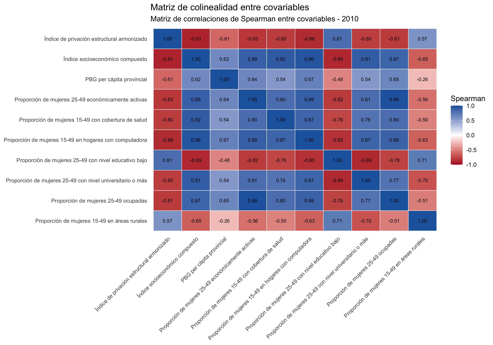
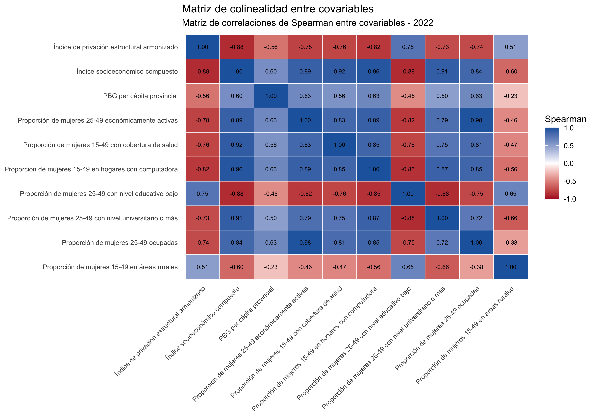

| Variable | Familia | Ventana etaria | Fuente | Definición | Notas | Rol metodológico |
|---|---|---|---|---|---|---|
| Proporción de mujeres 25-49 con nivel universitario o más | Educación | 25-49 | Base procesada de fecundidad | Proporción de mujeres de 25 a 49 años con nivel universitario o más. | Se restringe a 25-49 porque entre los 15 y 24 años una fracción importante todavía está completando estudios. Si se ampliara sin más a 15-49, se mezclarían logros educativos ya consolidados con trayectorias aún abiertas. | Proxy de capital educativo femenino ya consolidado |
| Proporción de mujeres 25-49 con nivel educativo bajo | Educación | 25-49 | Base procesada de fecundidad | Proporción de mujeres de 25 a 49 años con nivel educativo bajo. | La misma lógica vale aquí: se busca medir nivel alcanzado, no etapa escolar en curso. Por eso el recorte 25-49 es metodológicamente más limpio que 15-49 para variables educativas. | Gradiente educativo inverso de la transición |
| Proporción de mujeres 25-49 económicamente activas | Mercado laboral | 25-49 | REDATAM 2010/2022 | Proporción de mujeres de 25 a 49 años económicamente activas. | La condición de actividad existe para edades menores, pero el tramo 15-24 está mucho más atravesado por estudio, inserciones precarias y entradas/salidas rápidas del mercado laboral. El recorte 25-49 privilegia una inserción laboral más estabilizada y comparable con trayectorias reproductivas adultas. | Inserción laboral ampliada |
| Proporción de mujeres 25-49 ocupadas | Mercado laboral | 25-49 | REDATAM 2010/2022 | Proporción de mujeres de 25 a 49 años efectivamente ocupadas. | Se mantiene 25-49 por la misma razón que la actividad: interesa aproximar inserción laboral adulta y no la fuerte inestabilidad ocupacional propia del ingreso juvenil al mercado de trabajo. | Inserción laboral efectiva |
| Proporción de mujeres 15-49 con cobertura de salud | Salud y protección social | 15-49 | REDATAM 2010/2022 | Proporción de mujeres de 15 a 49 años con cobertura de salud. | Aquí sí se usa 15-49 completo porque la pregunta existe para toda la población y la cobertura es sustantivamente relevante también en edades jóvenes, especialmente en relación con acceso a salud sexual y reproductiva. | Obra social, prepaga o plan estatal |
| Índice de privación estructural armonizado | Pobreza estructural | 15-49 | REDATAM 2010/2022 | Índice resumen de privaciones estructurales del hogar. | Se calcula sobre el universo 15-49 porque las condiciones del hogar afectan al conjunto de mujeres en edad reproductiva y no dependen de la consolidación de una trayectoria educativa u ocupacional individual. | Proxy comparable de pobreza/NBI entre censos |
| Proporción de mujeres 15-49 en hogares con computadora | Condiciones materiales | 15-49 | REDATAM 2010/2022 | Proporción de mujeres de 15 a 49 años en hogares con computadora. | Se conserva el universo 15-49 completo porque la tenencia del equipamiento es un atributo del hogar y no de una trayectoria individual ya cerrada. | Proxy de recursos del hogar y conectividad |
| Proporción de mujeres 15-49 en áreas rurales | Contexto territorial | 15-49 | REDATAM 2010/2022 | Proporción de mujeres de 15 a 49 años en áreas rurales. | Se utiliza 15-49 completo porque la ruralidad es un rasgo territorial-contextual y no una condición que cambie de interpretación entre los distintos subtramos de la edad reproductiva. | Control de ruralidad y accesibilidad territorial |
| PBG per cápita provincial | Producto e ingreso | Provincial | Ministerio de Economía - Información Económica Provincial | Producto Bruto Geográfico per cápita a escala provincial. | No hay ventana etaria porque no es una variable individual ni de hogar; es un control de contexto provincial. | Control contextual macroterritorial repetido a nivel departamental |
| Índice socioeconómico compuesto | Nivel socioeconómico | 15-49 / 25-49 | Compuesto derivado | Índice socioeconómico compuesto derivado de varias proxies favorables. | Su base combina componentes de 25-49 y de 15-49. Eso no es un problema estadístico en sí mismo, pero debe explicitarse porque resume dimensiones con ventanas etarias distintas. | Síntesis exploratoria de bienestar relativo |
Preparación hacia GWR
Selección y evaluación espacial de covariables con TGF como resultado central
1 Objetivo y lugar de este notebook
El notebook 1 mostró dos cosas al mismo tiempo: que la fecundidad argentina bajó y que, aun así, su mapa no perdió orden. La pregunta que sigue no es menor. Si el territorio todavía importa, ¿qué variables conviene llevar al modelado para explicar esa estructura sin sobrecargarlo de redundancias o de proxies poco defendibles?
Este segundo notebook responde esa pregunta y cumple una función bisagra dentro de la tesis. Ya no se trata de describir el fenómeno, sino de decidir con qué covariables vale la pena intentar explicarlo en el paso siguiente. La TGF ocupa aquí el centro del argumento porque es la medida más cercana al modelado posterior; la PMG y la PMF 40-44 entran como contrastes para verificar si las conclusiones cambian cuando lo que se observa es, respectivamente, acumulación amplia o fecundidad casi completada.
La decisión metodológica no es decorativa. Una selección hecha solo por disponibilidad puede producir modelos opacos, con variables que “funcionan” estadísticamente pero no agregan interpretación, o con covariables tan parecidas entre sí que terminan compitiendo por describir la misma dimensión. Siguiendo la secuencia sugerida por Chi y Zhu, antes de pasar a modelos espaciales más formales conviene revisar si cada covariable tiene sentido sustantivo, si es comparable entre censos, si se asocia con el resultado y si ayuda a absorber parte de su geografía (Chi y Zhu 2008, 2019).
2 Fuentes, unidad de análisis y construcción de la base
La base parte de los microdatos censales de 2010 y 2022, procesados con REDATAM y REDATAMX sobre el universo de mujeres en edad reproductiva. Para identificar las preguntas originales y la definición oficial de cada variable se usan, además, el cuestionario ampliado 2010, el cuestionario 2022 y los documentos de definiciones de las bases REDATAM correspondientes (Instituto Nacional de Estadística y Censos 2010a, 2022a, 2010b, 2022b, 2013a, 2025a). Todas las covariables se agregan a nivel departamental, que es la misma unidad espacial utilizada en los análisis espaciales del notebook 1.
Para ello se armó una base departamento × censo con tres tipos de información:
- Tres resultados demográficos (
pmg,tgfypmf_40_44), ya auditados y definidos en continuidad con el notebook 1. - Covariables comparables entre 2010 y 2022, derivadas de educación, trabajo, cobertura, ruralidad y condiciones del hogar.
- Un control macroterritorial (
pbg_per_capita_provincial) incorporado desde la planilla oficial de Información Económica Provincial (Ministerio de Economía de la Nación Argentina 2024).
En el caso del PBG per cápita provincial, se revisaron dos portales oficiales: la página de Información Económica Provincial del Ministerio de Economía (Ministerio de Economía de la Nación Argentina 2024) y el portal temático de indicadores de argentina.gob.ar (Ministerio de Economía de la Nación Argentina 2026). La referencia principal adoptada en esta tesis es la primera, porque es la fuente consignada dentro de la propia planilla iep_produccion.xlsx; la segunda funciona como puerta de acceso institucional a los mismos informes y como verificación secundaria del catálogo temático.
La PMG departamental se define como:
\[ PMG_d = \frac{\sum_h h \, n_{dh}}{\sum_h n_{dh}} \]
donde \(n_{dh}\) es la cantidad de mujeres del departamento \(d\) con \(h\) hijos nacidos vivos. Como ya se justificó en el notebook 1, la inclusión de las mujeres sin hijos es central porque permite captar nuliparidad y postergación, dos dimensiones especialmente relevantes en la fase reciente de la baja fecundidad argentina (Pardo et al. 2025).
La TGF se reconstruye con la lógica oficial de tasas específicas por edad:
\[ TGF_d = 5\sum_a \frac{B_{da}}{M_{da}} \]
donde \(B_{da}\) son los nacimientos del último año a mujeres del grupo de edad \(a\) y \(M_{da}\) la población femenina de ese mismo grupo. En términos demográficos, la TGF enfatiza la intensidad reciente del período y está más cerca del tipo de resultado que luego suele utilizarse en modelos de fecundidad basados en tasas (Instituto Nacional de Estadística y Censos 2025b). En este proyecto debe leerse como TGF censal reconstruida: se calcula dentro de la fuente censal para preservar comparabilidad departamental, mientras que la TGF oficial difundida por INDEC se apoya en estadísticas vitales, correcciones demográficas y proyecciones de población (Instituto Nacional de Estadística y Censos 2023, 2025d, 2025e). Esa diferencia de fuente es metodológica, no un error de cálculo.
La PMF se calcula aquí con mujeres de 40 a 44 años. No pretende replicar exactamente la convención oficial clásica de 45-49, sino producir una medida de fecundidad casi completada más coherente con el foco analítico de esta tesis:
\[ PMF_d = \frac{\sum_h h \, n_{d,40-44,h}}{\sum_h n_{d,40-44,h}} \]
Su interés para esta tesis es complementario: mientras la TGF privilegia calendario reciente, la PMF 40-44 resume el número de hijos ya acumulado en cohortes muy avanzadas de la vida fértil. Trabajar con las tres métricas evita confundir cambios de quantum con desplazamientos del calendario reproductivo.
Dos covariables requieren una explicación adicional porque son construcciones analíticas del proyecto y no variables originales únicas del censo:
\[ IP_d = \frac{1}{4}\left( p^{viv.precaria}_d + p^{agua.deficitaria}_d + p^{saneamiento.deficitario}_d + p^{hacinamiento.critico}_d \right) \]
El índice de privación estructural (\(IP_d\)) resume cuatro privaciones materiales comparables entre ambos censos. Se utiliza para aproximar pobreza estructural cuando el NBI oficial no está disponible de manera simétrica dentro del pipeline actual. La decisión de usarlo como alternativa se debe a que para comparar 2010 y 2022 hace falta una construcción que pueda levantarse con la misma lógica en ambos operativos. El NBI oficial depende de dimensiones complejas que hoy no quedaron recuperables con igual granularidad en las bases trabajadas, especialmente la capacidad de subsistencia. En cambio, el \(IP_d\) se sostiene sobre cuatro dimensiones observables en ambos censos y directamente ligadas a infraestructura habitacional y hacinamiento (Instituto Nacional de Estadística y Censos 2010b, 2013a, 2025a).
\[ SES_d = \frac{1}{4}\left[ z(educ_{univ,d}) + z(cobertura_d) + z(computadora_d) + z(1 - IP_d) \right] \]
El índice socioeconómico compuesto (\(SES_d\)) busca capturar la posición relativa de cada departamento dentro de su propio censo. Para eso combina educación universitaria, cobertura, computadora y baja privación después de tipificarlas mediante puntajes \(z\). Tipificar una variable equivale a restarle su media y dividirla por su desvío estándar:
\[ z(x_i)=\frac{x_i-\bar{x}}{s_x} \]
Esa operación vuelve comparables variables originalmente medidas en escalas distintas. Por ejemplo, una proporción educativa y una proporción de cobertura quedan expresadas en una unidad común: desvíos estándar respecto de la media del año. Esto es útil porque lo que interesa aquí no es medir progreso absoluto nacional, sino posición relativa dentro de la estructura territorial de cada censo.
La consecuencia metodológica es importante. Como los puntajes \(z\) se recalculan en cada censo, el \(SES_d\) no debe interpretarse como una métrica de mejora absoluta intercensal. Si un departamento tiene \(SES_d = +1\) en 2010 y también \(SES_d = +1\) en 2022, eso no significa que “no cambió”; significa que conservó una ventaja relativa similar respecto del promedio de su época. El índice sirve para comparar posiciones dentro del mapa social de cada año, no niveles absolutos entre años.
La tabla siguiente resume el conjunto de covariables consideradas y el motivo por el que entran a esta etapa.
Las variables educativas y laborales se restringen a 25-49 años no porque el resto de las edades no importe, sino porque entre 15 y 24 años todavía están muy abiertas tanto la acumulación educativa como la inserción laboral. En un análisis de covariables, mezclar resultados ya consolidados con trayectorias juveniles en curso puede introducir ruido difícil de interpretar. En cambio, para coberturas, condiciones del hogar y ruralidad sí es razonable conservar el universo 15-49 completo.
El NBI oficial quedó fuera del núcleo comparativo de este notebook. La razón no es sustantiva sino operativa: dentro del pipeline actual no quedó reconstruido con simetría suficiente para 2010, de modo que incorporarlo en tablas y mapas intercensales introduciría un problema de comparabilidad mayor al beneficio analítico que podría aportar en esta etapa.
2.1 Definiciones oficiales de las variables censales empleadas
2.1.1 Educación
Fuente oficial. 2010: preguntas 18 a 21 del cuestionario ampliado; 2022: preguntas P06 a P12 y variable REDATAM MNI (Instituto Nacional de Estadística y Censos 2010b, 2025a).
Definición oficial resumida. El censo releva asistencia, nivel cursado y completitud. En 2022, REDATAM resume esa trayectoria en el ‘máximo nivel de instrucción alcanzado’, distinguiendo si el nivel fue completado o no.
Uso en esta tesis. A partir de esa información se armonizan dos extremos del gradiente educativo: educación baja y educación universitaria o más.
2.1.2 Cobertura de salud
Fuente oficial. 2010 y 2022: pregunta sobre cobertura de salud por obra social, prepaga o planes estatales (Instituto Nacional de Estadística y Censos 2010b, 2022b, 2025a).
Definición oficial resumida. La pregunta distingue entre cobertura por obra social/prepaga, cobertura por programas o planes estatales y ausencia de cobertura.
Uso en esta tesis. Se recodifica como covariable binaria agregada: tiene algún tipo de cobertura versus no tiene.
2.1.3 Actividad económica
Fuente oficial. 2010: preguntas 25 a 28 del cuestionario ampliado y definición CONDACT; 2022: definición CONDACT en REDATAM (Instituto Nacional de Estadística y Censos 2010b, 2013a, 2025a).
Definición oficial resumida. La condición de actividad clasifica a la población en ocupada, desocupada o inactiva según trabajo, búsqueda y disponibilidad en el período de referencia censal.
Uso en esta tesis. Se usan dos variantes: económicamente activas y ocupadas. Ambas se agregan departamentalmente sobre mujeres de 25 a 49 años.
2.1.4 Computadora en el hogar
Fuente oficial. 2010: pregunta 28 del cuestionario ampliado; 2022: variable del hogar H24C (Instituto Nacional de Estadística y Censos 2010b, 2025a).
Definición oficial resumida. La variable refiere a la tenencia de computadora, tablet o equipamiento equivalente en el hogar.
Uso en esta tesis. Se emplea como proxy material sencilla y comparable entre censos.
2.1.5 Área urbano-rural
Fuente oficial. Variable URP en las bases REDATAM 2010 y 2022 (Instituto Nacional de Estadística y Censos 2013a, 2025a).
Definición oficial resumida. Clasifica el territorio en urbano, rural agrupado y rural disperso. La distinción depende de la existencia de localidades y de su tamaño poblacional.
Uso en esta tesis. En esta tesis se define ruralidad como la suma de rural agrupado y rural disperso.
2.1.6 NBI oficial
Fuente oficial. Variables NBI_* y NBI_TOT de REDATAM 2022 (Instituto Nacional de Estadística y Censos 2025a).
Definición oficial resumida. El NBI oficial sintetiza privaciones estructurales del hogar mediante dimensiones institucionalmente definidas por INDEC.
Uso en esta tesis. Se usa como sensibilidad en 2022, pero no integra el núcleo intercensal porque no quedó disponible de manera simétrica dentro del pipeline actual.
2.1.7 Índice de privación estructural
Fuente oficial. No es una variable oficial única: se construye con variables oficiales de vivienda, agua, saneamiento y hacinamiento (Instituto Nacional de Estadística y Censos 2010b, 2013a, 2025a).
Definición oficial resumida. Retoma dimensiones censales clásicas de privación material comparables entre ambos censos.
Uso en esta tesis. Se utiliza como proxy armónica de pobreza estructural para sostener comparabilidad entre 2010 y 2022.
La mortalidad infantil formó parte de la lista original de posibles covariables, pero en esta etapa queda deliberadamente fuera del núcleo principal. No surge de la misma base individual de mujeres de manera comparable entre 2010 y 2022, por lo que su incorporación exige estadísticas vitales externas o una estrategia indirecta específica. Por eso se la deja para una etapa posterior.
3 Criterio metodológico de selección
La lógica del notebook sigue la secuencia recomendada por Chi y Zhu para el paso previo a los modelos espaciales (Chi y Zhu 2008, 2019). Primero, confirmar que el resultado tiene estructura espacial, algo ya trabajado en el notebook 1. Segundo, verificar si cada covariable presenta también autocorrelación espacial propia. Tercero, medir su asociación con la TGF censal reconstruida, que es el resultado central para la etapa posterior de modelado porque está disponible con granularidad departamental simétrica para ambos censos. Cuarto, evaluar si un modelo de regresión lineal simple ajustado por mínimos cuadrados con esa covariable reduce parte del patrón espacial residual. Quinto, revisar colinealidad para evitar especificaciones con información duplicada. La PMG y la PMF 40-44 permanecen como contrastes: sirven para ver si la lectura cambia cuando el énfasis pasa de fecundidad reciente a acumulación.
La teoría ayuda a no elegir variables irrelevantes. La comparabilidad intercensal evita que un cambio de definición se confunda con un cambio social real. La asociación bivariada muestra si la covariable se mueve con el resultado. El Moran de residuos permite ver si esa covariable captura algo de la geografía observada. Y la colinealidad advierte cuándo dos variables están compitiendo por explicar prácticamente la misma dimensión.
4 Glosario de conceptos y notación
4.1 PMG
Notación o fórmula.
\(PMG_d = \frac{\sum_h h\,n_{dh}}{\sum_h n_{dh}}\)
Paridez media general. Resume la cantidad media acumulada de hijas e hijos nacidos vivos por mujer en edad reproductiva dentro del departamento \(d\).
4.2 TGF
Notación o fórmula.
\(TGF_d = 5\sum_a \frac{B_{da}}{M_{da}}\)
Tasa global de fecundidad reconstruida a partir de nacimientos del último año y población femenina por grupos quinquenales de edad. Resume intensidad reciente del período y conserva la lógica oficial de las tasas específicas por edad (Instituto Nacional de Estadística y Censos 2025b).
4.3 PMF 40-44
Notación o fórmula.
\(PMF_d = \frac{\sum_h h\,n_{d,40-44,h}}{\sum_h n_{d,40-44,h}}\)
Paridez media final operativizada en esta tesis para mujeres de 40 a 44 años. Aproxima descendencia casi completada y permite contrastar intensidad reciente con acumulación avanzada (Instituto Nacional de Estadística y Censos 2013b, 2025c).
4.4 Puntaje tipificado
Notación o fórmula.
\(z(x_i)=\frac{x_i-\bar{x}}{s_x}\)
Transformación que expresa cuánto se aparta un valor de la media de su censo, medido en desvíos estándar.
4.5 Matriz de pesos espaciales
Notación o fórmula.
\(W = [w_{ij}]\)
Matriz que indica qué departamentos se consideran vecinos y con qué peso. Aquí se usa contigüidad Queen de primer orden, estandarizada por filas.
4.6 Pearson
Notación o fórmula.
\(r = \frac{\sum_i (x_i-\bar{x})(y_i-\bar{y})}{\sqrt{\sum_i (x_i-\bar{x})^2\sum_i (y_i-\bar{y})^2}}\)
Coeficiente de asociación lineal. Mide si los desvíos respecto de la media tienden a moverse en la misma dirección o en direcciones opuestas.
4.7 Spearman
Notación o fórmula.
\(\rho_s = cor(R_x, R_y)\)
Coeficiente de asociación monotónica calculado sobre rangos. En ausencia de empates puede escribirse como \(1 - \frac{6\sum d_i^2}{n(n^2-1)}\).
4.8 Modelo de regresión lineal simple ajustado por mínimos cuadrados
Notación o fórmula.
\(Y_i = \alpha + \beta X_i + \varepsilon_i\)
Modelo base en el que \(Y_i\) es el resultado demográfico analizado, \(X_i\) la covariable y \(\varepsilon_i\) el error no observable. La recta estimada minimiza la suma de cuadrados de los residuos observables \(r_i = Y_i - \widehat{Y}_i\). Se usa aquí como diagnóstico preliminar, no como modelo final.
4.9 Beta estandarizado
Notación o fórmula.
\(\beta^*\)
Pendiente estimada después de tipificar resultado y covariable. Indica cuántos desvíos estándar cambia \(Y\) cuando la covariable aumenta un desvío estándar.
4.10 Coeficiente de determinación
Notación o fórmula.
\(R^2\)
Proporción de la variación total del resultado demográfico que queda explicada por la recta ajustada dentro del modelo lineal simple.
4.11 Coeficiente de determinación ajustado
Notación o fórmula.
\(R^2_{aj}\)
Versión penalizada del \(R^2\) que corrige por cantidad de predictores. En este notebook la penalización es pequeña porque siempre se trabaja con una sola covariable por vez, es decir, con \(k=1\).
4.12 Moran global
Notación o fórmula.
\(I\)
Estadístico global de autocorrelación espacial. Indica si valores similares tienden a agruparse en el territorio con más frecuencia de la esperable al azar.
4.13 LISA
Notación o fórmula.
\(I_i = z_i \sum_j w_{ij} z_j\)
Versión local del Moran. Permite identificar conglomerados Alto-Alto, Bajo-Bajo y observaciones discordantes a escala departamental.
4.14 Moran de residuos
Notación o fórmula.
\(I(r)\)
Moran global calculado sobre los residuos observables \(r_i = Y_i - \widehat{Y}_i\) del modelo lineal simple. Si sigue siendo alto, la covariable explicó parte del nivel medio, pero dejó sin absorber una fracción importante de la estructura espacial.
4.15 Concordancia LISA direccional
Notación o fórmula.
\(P,\ R,\ F1\)
Heurística exploratoria ad hoc que compara núcleos LISA significativos de una covariable con los del resultado respetando el signo esperado. Se conserva como apoyo interpretativo secundario, no como criterio central de selección.
4.16 Colinealidad
Notación o fórmula.
\(X_2 \approx a + bX_1\)
Situación en la que dos covariables comparten demasiada información. En un modelo conjunto eso vuelve inestables los coeficientes y dificulta separar qué parte del efecto corresponde a cada una.
5 Métricas del análisis de covariables: qué se calcula, cómo y para qué
5.1 Correlaciones de Pearson y Spearman
Para cada covariable \(X\) se calculan dos medidas de asociación con el resultado demográfico \(Y\). En el cuerpo principal del notebook ese resultado es la TGF; luego se repite la misma lógica para PMG y PMF 40-44 como contraste.
\[ r_{X,Y} = \frac{\operatorname{cov}(X,Y)}{s_X s_Y} = \frac{\sum_i (x_i-\bar{x})(y_i-\bar{y})} {\sqrt{\sum_i (x_i-\bar{x})^2 \sum_i (y_i-\bar{y})^2}} \]
\[ \rho_s = cor(R_X, R_Y) = \frac{\sum_i (R_{Xi}-\bar R_X)(R_{Yi}-\bar R_Y)} {\sqrt{\sum_i (R_{Xi}-\bar R_X)^2 \sum_i (R_{Yi}-\bar R_Y)^2}} \]
donde \(R_{Xi}\) es el rango de la covariable en el departamento \(i\) y \(R_{Yi}\) es el rango del resultado en ese mismo departamento.
Conviene detenerse en qué hace exactamente cada coeficiente. En Pearson, el numerador suma productos centrados \((x_i-\bar{x})(y_i-\bar{y})\). Si un departamento queda por encima de la media tanto en la covariable como en el resultado, el producto es positivo; si queda por encima en una y por debajo en la otra, el producto es negativo. Al dividir por los desvíos estándar de ambas variables, el coeficiente queda entre \(-1\) y \(1\) (Pearson 1895). Matemáticamente, eso lo convierte en una medida de asociación lineal entre los apartamientos respecto de la media.
La utilidad concreta de Pearson en este notebook es que responde una pregunta precisa: qué tan bien puede resumirse la relación entre una covariable y el resultado mediante una recta. Si Pearson es negativo y grande en valor absoluto, la lectura es que los departamentos que se apartan hacia arriba en la covariable tienden a apartarse hacia abajo en la TGF. Si es positivo, ambos apartamientos tienden a moverse en la misma dirección.
Spearman trabaja sobre rangos, no sobre los valores originales (Spearman 1904). Primero ordena los departamentos de menor a mayor según la covariable y según el resultado; luego correlaciona esos dos ordenamientos. Por eso captura asociación monotónica: incluso si la relación no es lineal, Spearman será alto en valor absoluto siempre que los departamentos con valores relativamente altos de una variable tiendan a ocupar posiciones relativamente altas o bajas en la otra.
En ausencia de empates, Spearman puede escribirse como:
\[ \rho_s = 1 - \frac{6 \sum_i d_i^2}{n(n^2-1)} \]
donde \(d_i = R_{Xi} - R_{PMGi}\). Esta expresión ayuda a la intuición: si los ordenamientos son muy parecidos, los \(d_i^2\) son pequeños y \(\rho_s\) queda cerca de \(1\); si son opuestos, queda cerca de \(-1\). En los datos reales del notebook hay empates, de modo que la implementación correcta es la formulación general sobre rangos.
En esta tesis se informan ambos porque responden a preguntas complementarias. Pearson ayuda a leer linealidad y signo en la escala original. Spearman ayuda a leer ordenamientos monotónicos de forma más robusta frente a curvaturas y valores extremos. Si ambos apuntan en la misma dirección y con magnitudes parecidas, la relación es estable. Si difieren mucho, eso sugiere que la asociación existe, pero no sigue una recta limpia.
5.2 Modelo de regresión lineal simple ajustado por mínimos cuadrados, beta estandarizado y R² ajustado
Antes de pasar a modelos espaciales, para cada covariable se ajusta:
\[ Y_i = \alpha + \beta X_i + \varepsilon_i \]
Aquí \(\varepsilon_i\) es el término de error no observable de la unidad \(i\). Esto importa porque conviene distinguirlo del residuo. Una vez ajustado el modelo, lo que sí se observa es:
\[ \widehat{Y}_i = \hat{\alpha} + \hat{\beta} X_i \]
\[ r_i = Y_i - \widehat{Y}_i \]
Los mínimos cuadrados ordinarios eligen \(\hat{\alpha}\) y \(\hat{\beta}\) de manera tal que la suma de cuadrados residuales sea mínima:
\[ \sum_i r_i^2 = \sum_i \left(PMG_i - \hat{\alpha} - \hat{\beta} X_i\right)^2 \]
La lectura de sus componentes es la siguiente:
- \(\alpha\) es la ordenada al origen: el valor esperado del resultado cuando \(X=0\).
- \(\beta\) es la pendiente: cuánto cambia, en promedio, el resultado cuando la covariable aumenta una unidad.
- \(\varepsilon_i\) es el error no observable.
- \(r_i\) es el residuo observable, es decir, la parte que la recta no alcanzó a reproducir en el departamento \(i\).
Este modelo no se usa como modelo final, sino como diagnóstico preliminar (Chi y Zhu 2008, 2019). Su utilidad en este notebook es doble. Por un lado, permite ver si el signo de la pendiente es interpretable. Por otro, produce residuos para preguntar si, una vez controlada una covariable, sigue quedando geografía sin explicar. Si una covariable captura una parte importante del gradiente territorial de la fecundidad, el patrón espacial de los residuos debería ser menos intenso que el patrón espacial original del resultado.
El beta estandarizado surge de correr la misma regresión sobre variables tipificadas:
\[ z(PMG_i) = \alpha^* + \beta^* z(X_i) + \varepsilon_i^* \]
Tipificar significa transformar cada observación mediante
\[ z(x_i)=\frac{x_i-\bar{x}}{s_x} \]
Si un valor coincide con la media, su puntaje tipificado es \(0\). Si está un desvío estándar por encima, su puntaje es \(1\). Si está medio desvío por debajo, su puntaje es \(-0{,}5\). La pendiente estandarizada \(\beta^*\) expresa entonces cuántos desvíos estándar cambia el resultado cuando la covariable aumenta un desvío estándar. Esa reexpresión es útil porque pone en una misma escala una proporción educativa, una medida de cobertura o un índice compuesto.
Un ejemplo didáctico ayuda. Si para una covariable se obtiene \(\beta^*=-0{,}86\), la lectura es: al comparar dos departamentos que difieren en un desvío estándar en esa covariable, se espera que la TGF difiera, en promedio, \(0{,}86\) desvíos estándar en sentido inverso. No significa una caída de “0,86 hijas o hijos”, sino una diferencia en unidades tipificadas, comparables entre covariables.
El \(R^2\) ajustado se define como:
\[ R^2_{aj} = 1 - (1-R^2)\frac{n-1}{n-k-1} \]
Aquí \(k=1\) porque, en esta etapa del análisis de covariables, cada modelo incluye exactamente una covariable explicativa por vez. El intercepto no se contabiliza dentro de \(k\) en esta fórmula.
El \(R^2\) simple mide qué proporción de la variación total del resultado queda explicada por la recta ajustada. En regresión lineal simple con intercepto vale además la identidad \(R^2 = r^2\), donde \(r\) es la correlación de Pearson. El \(R^2\) ajustado corrige ese valor por tamaño muestral y cantidad de predictores, de modo que penaliza modelos más complejos. En esta etapa la penalización es pequeña, pero se informa igual para mantener continuidad metodológica con el paso siguiente.
No existe un “buen” \(R^2\) universal para todos los problemas. En este notebook conviene leerlo de forma relativa al conjunto de covariables consideradas. Dentro de esta batería, valores por encima de 0,500 quedan en el cuartil superior del desempeño bivariado, mientras que valores cercanos o inferiores a 0,356 quedan en el cuartil inferior.
5.3 Moran global
La autocorrelación espacial global se mide con el estadístico de Moran (Moran 1950):
\[ I = \frac{n}{S_0} \, \frac{\sum_i \sum_j w_{ij}(x_i-\bar{x})(x_j-\bar{x})} {\sum_i (x_i-\bar{x})^2} \]
donde \(W=[w_{ij}]\) es la matriz de pesos espaciales. En este proyecto, tal como en el notebook 1, se usa contigüidad Queen de primer orden con estandarización por filas. La misma matriz se aplica a todas las covariables y al resultado analizado para que las comparaciones sean consistentes.
El estadístico toma productos cruzados entre desvíos respecto de la media, pero solo entre vecinos, ponderados por \(w_{ij}\). Si un departamento con valor alto está rodeado de vecinos también altos, el producto cruzado tiende a ser positivo. Si un valor alto está rodeado de bajos, tiende a ser negativo. Moran resume, entonces, si los valores parecidos están espacialmente próximos más de lo esperable por azar.
Interpretación:
- Si \(I > 0\), valores parecidos tienden a agruparse.
- Si \(I \approx 0\), la distribución se parece a una asignación espacial aleatoria.
- Si \(I < 0\), predominan configuraciones tipo “tablero de ajedrez”.
Un Moran alto solo indica que esa covariable también tiene una geografía propia, no necesariamente que vaya a explicar la distribución espacial de los valores de la TGF.
Para que sea útil en esta tesis, una variable, además de tener patrón espacial, debe tener sentido teórico, asociación interpretable y aportar algo frente a la estructura espacial del resultado.
Junto con el estadístico suele reportarse un valor \(p\). Su intuición general es la usual: mide cuán raro sería observar un Moran tan grande como el obtenido si la hipótesis nula de ausencia de autocorrelación espacial fuera cierta. En el pipeline se usa moran.test(..., alternative = "greater"), es decir, una prueba unilateral orientada a detectar autocorrelación positiva. En este notebook el valor \(p\) cumple un papel de respaldo inferencial, pero la interpretación sustantiva se concentra en la magnitud de \(I\) y en la comparación entre covariables.
5.4 Moran local y clústeres LISA
El Moran local o LISA sigue a Anselin (Anselin 1995):
\[ I_i = z_i \sum_j w_{ij} z_j \]
con \(z_i\) como valor tipificado de la unidad \(i\). A diferencia del Moran global, que produce un único valor para todo el país, el LISA produce un valor por departamento. Por eso permite descomponer la autocorrelación espacial global y localizar dónde están los núcleos territoriales más consistentes.
En la práctica se usa para clasificar departamentos en:
- Alto-Alto: valor alto rodeado de valores altos.
- Bajo-Bajo: valor bajo rodeado de valores bajos.
- Alto-Bajo: valor alto rodeado de valores bajos.
- Bajo-Alto: valor bajo rodeado de valores altos.
En este notebook se consideran como clústeres “centrales” los casos Alto-Alto y Bajo-Bajo con \(p \le 0{,}05\), porque son los que mejor sintetizan núcleos territoriales estables. Los casos Alto-Bajo y Bajo-Alto no se descartan: simplemente cumplen otro rol analítico, más ligado a observaciones discordantes o a fronteras espaciales.
5.5 Moran de residuos y reducción del patrón espacial
Una vez ajustado el modelo de regresión lineal simple por mínimos cuadrados, se calcula Moran sobre los residuos \(r_i\):
\[ I_{res} = I(r) \]
y se resume una mejora exploratoria mediante:
\[ \Delta I = I(Y) - I(r) \]
Los residuos son la parte observable del resultado que el modelo no explicó. Si, una vez restado el efecto medio de la covariable, esos residuos siguen exhibiendo autocorrelación espacial, entonces todavía queda estructura territorial sin absorber. Eso significa que la covariable puede estar asociada con la TGF, pero no explicar bien su organización espacial.
La razón por la que este diagnóstico es útil es la siguiente. Si la ecuación
\[ Y_i = \alpha + \beta X_i + \varepsilon_i \]
captura una porción importante del gradiente territorial del resultado, entonces esa porción deja de aparecer en \(r_i\). En consecuencia, la geografía de los residuos debería ser menos agrupada que la geografía original del resultado. La diferencia \(\Delta I = I(Y) - I(r)\) resume justamente cuánto cayó la autocorrelación espacial después del ajuste. Si \(\Delta I\) es positiva y relativamente grande, la covariable absorbió parte del patrón espacial de la TGF. Si \(I_{res}\) sigue alto, la covariable no alcanza por sí sola para explicar esa estructura.
Como en el \(R^2\) ajustado, no hay un umbral universal. Dentro del conjunto de covariables de este notebook, reducciones del Moran por encima de 0,302 quedan en el cuartil superior; reducciones cercanas o inferiores a 0,145 indican un aporte más modesto a la absorción del patrón espacial.
5.6 Concordancia LISA direccional
Además del Moran global, se utiliza una heurística ad hoc para comparar mapas LISA de una manera interpretable. La idea es tratar a los clústeres centrales del resultado como patrón de referencia y preguntar cuánto coinciden con los clústeres centrales de cada covariable, respetando el signo esperado de la asociación.
Por clústeres centrales o núcleos significativos se entienden aquí los departamentos clasificados como Alto-Alto o Bajo-Bajo con significancia local al 5 %. Se usan esos dos tipos porque representan los focos territoriales más estables de concentración, mientras que Alto-Bajo y Bajo-Alto describen configuraciones fronterizas o atípicas de otra naturaleza.
Primero se cuentan las coincidencias esperadas:
\[ M_{dir} = \begin{cases} \#\{HH_{PMG} \leftrightarrow HH_X,\; LL_{PMG} \leftrightarrow LL_X\} & \text{si la relación esperada es directa} \\ \#\{HH_{PMG} \leftrightarrow LL_X,\; LL_{PMG} \leftrightarrow HH_X\} & \text{si la relación esperada es inversa} \end{cases} \]
Luego se calculan dos razones:
\[ P_{dir} = \frac{M_{dir}}{\#\{\text{núcleos significativos de la covariable}\}} \]
\[ R_{dir} = \frac{M_{dir}}{\#\{\text{núcleos significativos del resultado}\}} \]
Finalmente, se resume esa comparación mediante una media armónica:
\[ F1_{dir} = \frac{2P_{dir}R_{dir}}{P_{dir}+R_{dir}} \]
La precisión \(P_{dir}\) indica qué proporción de los núcleos significativos de la covariable cae donde se esperaba. La exhaustividad \(R_{dir}\) indica qué proporción de los núcleos significativos del resultado queda cubierta por la covariable. El \(F1_{dir}\) combina ambas cosas. Se usa la media armónica porque penaliza desequilibrios: si una covariable cubre muy bien unos pocos núcleos pero deja afuera muchos otros, o si cubre muchos pero con mucha “impureza”, el F1 no deja que una sola virtud tape la otra.
Esta medida no es un estadístico inferencial estándar como Moran o Pearson. Sigue siendo una heurística exploratoria y debe leerse como tal. Su ventaja es que explicita mejor un problema central para esta tesis: una covariable con relación inversa puede ser útil aunque no “copie” visualmente la geografía del resultado. Por eso la comparación debe respetar el signo esperado. Como su interpretación es más exigente que la de las otras métricas, aquí se la conserva solo como apoyo secundario y no como criterio principal de selección.
5.7 Colinealidad entre covariables
La colinealidad se estudia con correlaciones entre covariables, en especial con el valor absoluto de Spearman. El problema nace cuando una covariable puede aproximarse muy bien como combinación lineal de otra, por ejemplo \(X_2 \approx a + bX_1\). En ese caso, al pasar a un modelo multivariado, ambas variables compiten por explicar casi la misma porción de variación (Belsley et al. 1980).
Importa porque el modelo tiene que “repartir” una misma información entre covariables muy parecidas. El resultado puede ser coeficientes inestables, errores estándar inflados y hasta cambios de signo que no responden a un hallazgo sustantivo, sino a una dificultad algebraica para separar efectos casi superpuestos (Belsley et al. 1980). Por eso una relación muy alta no invalida una covariable, pero sí obliga a pensarla como sustituta o integrante de una misma familia, no como complemento necesario.
6 Primera intuición espacial
Como la TGF es el resultado central del modelado posterior, el primer filtro espacial del notebook se organiza alrededor de ella. Los Moran globales nacionales heredados del notebook 1 fueron los siguientes:
| Censo | Moran I de TGF |
|---|---|
| 2010 | 0.582 |
| 2022 | 0.646 |
Como la TGF tiene una geografía espacialmente estructurada, el primer filtro razonable es preguntar si las covariables también la tienen y si ayudan a absorber algo de esa estructura. La tabla siguiente no decide todavía el modelo, pero sí permite una primera lectura espacial antes de entrar en asociaciones y modelos. Por eso concentra solo indicadores espaciales: Moran global de la covariable, Moran de residuos luego del ajuste lineal simple y reducción del Moran.
| Censo | Variable | Familia | Dirección con TGF | Moran I TGF | Moran I covariable | Moran I residual | R² ajustado simple | Reducción de Moran |
|---|---|---|---|---|---|---|---|---|
| 2010 | PBG per cápita provincial | Producto e ingreso | Inversa | 0.582 | 0.865 | 0.482 | 0.181 | 0.100 |
| 2010 | Proporción de mujeres 15-49 en hogares con computadora | Condiciones materiales | Inversa | 0.582 | 0.792 | 0.336 | 0.488 | 0.247 |
| 2010 | Proporción de mujeres 15-49 con cobertura de salud | Salud y protección social | Inversa | 0.582 | 0.767 | 0.385 | 0.380 | 0.197 |
| 2010 | Índice socioeconómico compuesto | Nivel socioeconómico | Inversa | 0.582 | 0.765 | 0.309 | 0.513 | 0.273 |
| 2010 | Proporción de mujeres 25-49 económicamente activas | Mercado laboral | Inversa | 0.582 | 0.762 | 0.344 | 0.482 | 0.238 |
| 2010 | Proporción de mujeres 25-49 ocupadas | Mercado laboral | Inversa | 0.582 | 0.761 | 0.338 | 0.474 | 0.245 |
| 2010 | Índice de privación estructural armonizado | Pobreza estructural | Directa | 0.582 | 0.712 | 0.290 | 0.496 | 0.292 |
| 2010 | Proporción de mujeres 25-49 con nivel universitario o más | Educación | Inversa | 0.582 | 0.656 | 0.443 | 0.326 | 0.139 |
| 2010 | Proporción de mujeres 25-49 con nivel educativo bajo | Educación | Directa | 0.582 | 0.630 | 0.345 | 0.467 | 0.238 |
| 2010 | Proporción de mujeres 15-49 en áreas rurales | Contexto territorial | Directa | 0.582 | 0.283 | 0.543 | 0.108 | 0.039 |
| 2022 | PBG per cápita provincial | Producto e ingreso | Inversa | 0.646 | 0.861 | 0.542 | 0.177 | 0.103 |
| 2022 | Índice socioeconómico compuesto | Nivel socioeconómico | Inversa | 0.646 | 0.766 | 0.339 | 0.532 | 0.307 |
| 2022 | Proporción de mujeres 25-49 económicamente activas | Mercado laboral | Inversa | 0.646 | 0.766 | 0.257 | 0.577 | 0.388 |
| 2022 | Proporción de mujeres 15-49 con cobertura de salud | Salud y protección social | Inversa | 0.646 | 0.766 | 0.346 | 0.495 | 0.300 |
| 2022 | Proporción de mujeres 25-49 ocupadas | Mercado laboral | Inversa | 0.646 | 0.761 | 0.286 | 0.546 | 0.359 |
| 2022 | Proporción de mujeres 15-49 en hogares con computadora | Condiciones materiales | Inversa | 0.646 | 0.757 | 0.303 | 0.526 | 0.343 |
| 2022 | Índice de privación estructural armonizado | Pobreza estructural | Directa | 0.646 | 0.707 | 0.436 | 0.372 | 0.209 |
| 2022 | Proporción de mujeres 25-49 con nivel educativo bajo | Educación | Directa | 0.646 | 0.692 | 0.317 | 0.488 | 0.329 |
| 2022 | Proporción de mujeres 25-49 con nivel universitario o más | Educación | Inversa | 0.646 | 0.678 | 0.498 | 0.366 | 0.148 |
| 2022 | Proporción de mujeres 15-49 en áreas rurales | Contexto territorial | Directa | 0.646 | 0.283 | 0.600 | 0.056 | 0.046 |
{kind=link}
La lectura de esta sección debe hacerse con dos cuidados. Primero, un Moran alto indica patrón territorial, no capacidad explicativa. Segundo, una reducción apreciable del Moran de residuos no significa que la covariable “explique” por sí sola la TGF, sino que logra absorber una parte de su organización espacial. Esa es una pista útil para seleccionar covariables, no una prueba cerrada.
Vale la pena verlo con un ejemplo real. En 2022, la proporción de mujeres 25-49 con nivel universitario o más presenta Spearman = -0,631 frente a la TGF y deja un Moran de residuos de 0,498. La interpretación conjunta es fuerte: la asociación es inversa y, además, parte de la geografía de la TGF disminuye cuando esta covariable entra en un modelo lineal simple. El caso de la privación estructural muestra la lógica complementaria: la relación es directa y también reduce una fracción visible del Moran de residuos. Lo importante no es que ambas variables “dibujen lo mismo”, sino que lo hagan en direcciones teóricamente plausibles y con cierta capacidad de absorber patrón espacial.
6.1 CABA y sus comunas en la primera intuición espacial
En los mapas nacionales, CABA casi desaparece por escala cartográfica. Para no perder ese territorio, se resume por separado su rango interno de TGF.
| Censo | Mediana de TGF en CABA | Mínimo | Máximo |
|---|---|---|---|
| 2010 | 1.620 | 1.152 | 2.770 |
| 2022 | 0.907 | 0.795 | 1.374 |
{kind=link}
Este recorte no reemplaza el mapa nacional, pero evita una pérdida de información importante: en CABA la baja fecundidad reciente y la heterogeneidad entre comunas quedan visualmente comprimidas si solo se mira el país completo.
7 Asociación y ajuste con la TGF
La tabla siguiente resume la asociación bivariada entre cada covariable y la TGF. Aquí se concentran los indicadores de asociación y ajuste lineal del resultado principal del notebook; las métricas espaciales quedaron reunidas en la sección anterior para no mezclar planos analíticos distintos.
| Censo | Variable | Familia | Pearson | Spearman | Beta estandarizado | R² ajustado |
|---|---|---|---|---|---|---|
| 2010 | Proporción de mujeres 25-49 ocupadas | Mercado laboral | -0.689 | -0.679 | -0.689 | 0.474 |
| 2010 | Proporción de mujeres 25-49 económicamente activas | Mercado laboral | -0.695 | -0.679 | -0.695 | 0.482 |
| 2010 | Proporción de mujeres 15-49 en hogares con computadora | Condiciones materiales | -0.699 | -0.671 | -0.699 | 0.488 |
| 2010 | Índice socioeconómico compuesto | Nivel socioeconómico | -0.717 | -0.662 | -0.717 | 0.513 |
| 2010 | Índice de privación estructural armonizado | Pobreza estructural | 0.705 | 0.647 | 0.705 | 0.496 |
| 2010 | Proporción de mujeres 25-49 con nivel educativo bajo | Educación | 0.684 | 0.625 | 0.684 | 0.467 |
| 2010 | Proporción de mujeres 15-49 con cobertura de salud | Salud y protección social | -0.617 | -0.594 | -0.617 | 0.380 |
| 2010 | Proporción de mujeres 25-49 con nivel universitario o más | Educación | -0.572 | -0.589 | -0.572 | 0.326 |
| 2010 | PBG per cápita provincial | Producto e ingreso | -0.427 | -0.516 | -0.427 | 0.181 |
| 2010 | Proporción de mujeres 15-49 en áreas rurales | Contexto territorial | 0.332 | 0.309 | 0.332 | 0.108 |
| 2022 | Proporción de mujeres 25-49 económicamente activas | Mercado laboral | -0.760 | -0.763 | -0.760 | 0.577 |
| 2022 | Proporción de mujeres 25-49 ocupadas | Mercado laboral | -0.740 | -0.732 | -0.740 | 0.546 |
| 2022 | Índice socioeconómico compuesto | Nivel socioeconómico | -0.730 | -0.706 | -0.730 | 0.532 |
| 2022 | Proporción de mujeres 15-49 en hogares con computadora | Condiciones materiales | -0.726 | -0.705 | -0.726 | 0.526 |
| 2022 | Proporción de mujeres 25-49 con nivel educativo bajo | Educación | 0.699 | 0.693 | 0.699 | 0.488 |
| 2022 | Proporción de mujeres 15-49 con cobertura de salud | Salud y protección social | -0.705 | -0.686 | -0.705 | 0.495 |
| 2022 | Proporción de mujeres 25-49 con nivel universitario o más | Educación | -0.606 | -0.631 | -0.606 | 0.366 |
| 2022 | Índice de privación estructural armonizado | Pobreza estructural | 0.611 | 0.610 | 0.611 | 0.372 |
| 2022 | PBG per cápita provincial | Producto e ingreso | -0.423 | -0.464 | -0.423 | 0.177 |
| 2022 | Proporción de mujeres 15-49 en áreas rurales | Contexto territorial | 0.241 | 0.410 | 0.241 | 0.056 |
La lectura sustantiva de esta tabla exige no confundir “signo favorable” con “signo útil”. Una covariable puede ser analíticamente valiosa tanto si se asocia de manera directa con la TGF como si lo hace de manera inversa. Lo que importa es que el signo tenga sentido teórico, que sea estable y que la magnitud no se desarme entre censos.
En los resultados de este notebook aparecen tres familias especialmente nítidas. La primera es la de ventaja relativa: educación alta, SES compuesto, computadora y cobertura presentan relaciones inversas robustas con la TGF. Por ejemplo, el índice socioeconómico compuesto pasa de Spearman = -0,662 en 2010 a -0,706 en 2022, con \(R^2\) ajustado alto en ambos cortes. La segunda es la de desventaja estructural: educación baja y privación presentan relaciones directas y muy persistentes. La tercera es la del contexto territorial: ruralidad y PBG provincial siguen siendo informativos, pero con asociaciones más moderadas y menos capacidad para capturar la heterogeneidad departamental fina.
Eso permite una primera conclusión más rigurosa. No se trata de elegir solo variables con signo negativo o solo variables con signo positivo. Se trata de construir un conjunto que represente mecanismos sustantivos distintos: ventaja educativa, privación material, inserción institucional, actividad laboral y contexto territorial. Ese pluralismo analítico es preferible a un ranking plano de “mejores” y “peores” variables.
8 Persistencia entre censos
Como la tesis compara 2010 y 2022, no alcanza con mirar la fuerza de la asociación en un solo corte. También interesa saber si esa asociación persiste. Para eso se resumen tres dimensiones:
- Persistencia del signo: si la covariable conserva la misma dirección de asociación con la TGF en ambos censos.
- Persistencia de magnitud: cuánto cambia la intensidad absoluta de Spearman entre 2010 y 2022, medida con \(\Delta |\rho_s| = \left||\rho_{2022}|-|\rho_{2010}|\right|\).
- Persistencia territorial: correlación de Spearman entre el ordenamiento departamental de la covariable en 2010 y en 2022.
| Variable | Spearman 2010 | Spearman 2022 | Variación de la magnitud de Spearman | Persistencia territorial | Signo persistente |
|---|---|---|---|---|---|
| Proporción de mujeres 25-49 con nivel universitario o más | -0.589 | -0.631 | 0.042 | 0.955 | Sí |
| Proporción de mujeres 25-49 con nivel educativo bajo | 0.625 | 0.693 | 0.068 | 0.959 | Sí |
| Proporción de mujeres 25-49 económicamente activas | -0.679 | -0.763 | 0.084 | 0.936 | Sí |
| Proporción de mujeres 25-49 ocupadas | -0.679 | -0.732 | 0.053 | 0.926 | Sí |
| Proporción de mujeres 15-49 con cobertura de salud | -0.594 | -0.686 | 0.092 | 0.935 | Sí |
| Índice de privación estructural armonizado | 0.647 | 0.610 | 0.037 | 0.929 | Sí |
| Proporción de mujeres 15-49 en hogares con computadora | -0.671 | -0.705 | 0.034 | 0.939 | Sí |
| Proporción de mujeres 15-49 en áreas rurales | 0.309 | 0.410 | 0.101 | 0.956 | Sí |
| PBG per cápita provincial | -0.516 | -0.464 | 0.053 | 0.987 | Sí |
| Índice socioeconómico compuesto | -0.662 | -0.706 | 0.044 | 0.978 | Sí |
No conviene colapsar estas tres dimensiones en un único índice de persistencia, porque miden cosas distintas. El signo persistente pregunta si la relación cambia de dirección; el cambio absoluto de \(|\rho_s|\) pregunta cuánto cambia la intensidad; y la persistencia territorial pregunta si el ordenamiento departamental de la covariable se mantiene. Mantenerlas separadas es metodológicamente más claro que fabricar una sola cifra compuesta.
La mayoría de las covariables conserva tanto el signo de su asociación como un ordenamiento territorial muy parecido entre censos. Eso refuerza la idea de que no se trata simplemente de correlaciones circunstanciales de un año aislado. Los casos menos persistentes no deben descartarse de forma automática: más bien requieren interpretación histórica. Un ejemplo visible es la ruralidad, cuyo ordenamiento territorial sigue siendo muy estable, pero cuya asociación con la TGF se atenúa. Una hipótesis plausible es que, entre 2010 y 2022, la baja fecundidad se expandió hacia espacios antes más rezagados, reduciendo parte del contraste rural-urbano. En cambio, el PBG per cápita provincial muestra persistencia territorial casi perfecta, pero su escala provincial restringe la lectura fina de procesos departamentales.
9 Colinealidad entre covariables
Si dos covariables miden casi lo mismo, un modelo que las incluya juntas reparte artificialmente la explicación entre ambas y vuelve mucho más difícil interpretar los coeficientes. La tabla siguiente usa \(|\rho_s| \geq 0{,}75\) como umbral operativo de atención. No es una ley universal; es un criterio práctico para señalar pares cuyo ordenamiento territorial es tan parecido que conviene discutirlos como una misma familia analítica.


| Censo | Variable X | Variable Y | Pearson | Spearman |
|---|---|---|---|---|
| 2010 | Proporción de mujeres 25-49 económicamente activas | Proporción de mujeres 25-49 ocupadas | 0.993 | 0.992 |
| 2010 | Índice socioeconómico compuesto | Proporción de mujeres 15-49 en hogares con computadora | 0.961 | 0.964 |
| 2010 | Índice socioeconómico compuesto | Proporción de mujeres 15-49 con cobertura de salud | 0.918 | 0.923 |
| 2010 | Índice de privación estructural armonizado | Índice socioeconómico compuesto | -0.899 | -0.913 |
| 2010 | Índice socioeconómico compuesto | Proporción de mujeres 25-49 con nivel universitario o más | 0.831 | 0.910 |
| 2010 | Índice socioeconómico compuesto | Proporción de mujeres 25-49 con nivel educativo bajo | -0.904 | -0.890 |
| 2010 | Proporción de mujeres 25-49 económicamente activas | Proporción de mujeres 15-49 en hogares con computadora | 0.903 | 0.890 |
| 2010 | Índice socioeconómico compuesto | Proporción de mujeres 25-49 económicamente activas | 0.891 | 0.887 |
| 2010 | Proporción de mujeres 25-49 con nivel educativo bajo | Proporción de mujeres 25-49 con nivel universitario o más | -0.770 | -0.886 |
| 2010 | Índice de privación estructural armonizado | Proporción de mujeres 15-49 en hogares con computadora | -0.855 | -0.877 |
| 2010 | Proporción de mujeres 15-49 en hogares con computadora | Proporción de mujeres 25-49 ocupadas | 0.892 | 0.875 |
| 2010 | Proporción de mujeres 15-49 en hogares con computadora | Proporción de mujeres 25-49 con nivel universitario o más | 0.753 | 0.866 |
| 2010 | Índice socioeconómico compuesto | Proporción de mujeres 25-49 ocupadas | 0.878 | 0.866 |
| 2010 | Proporción de mujeres 15-49 con cobertura de salud | Proporción de mujeres 15-49 en hogares con computadora | 0.859 | 0.865 |
| 2010 | Proporción de mujeres 15-49 en hogares con computadora | Proporción de mujeres 25-49 con nivel educativo bajo | -0.871 | -0.850 |
| 2010 | Índice de privación estructural armonizado | Proporción de mujeres 25-49 económicamente activas | -0.835 | -0.826 |
| 2010 | Proporción de mujeres 25-49 económicamente activas | Proporción de mujeres 25-49 con nivel educativo bajo | -0.837 | -0.820 |
| 2010 | Índice de privación estructural armonizado | Proporción de mujeres 25-49 ocupadas | -0.815 | -0.812 |
| 2010 | Índice de privación estructural armonizado | Proporción de mujeres 25-49 con nivel educativo bajo | 0.842 | 0.810 |
| 2010 | Proporción de mujeres 25-49 económicamente activas | Proporción de mujeres 25-49 con nivel universitario o más | 0.681 | 0.809 |
| 2010 | Proporción de mujeres 25-49 económicamente activas | Proporción de mujeres 15-49 con cobertura de salud | 0.799 | 0.804 |
| 2010 | Índice de privación estructural armonizado | Proporción de mujeres 15-49 con cobertura de salud | -0.799 | -0.801 |
| 2010 | Proporción de mujeres 15-49 con cobertura de salud | Proporción de mujeres 25-49 ocupadas | 0.795 | 0.797 |
| 2010 | Índice de privación estructural armonizado | Proporción de mujeres 25-49 con nivel universitario o más | -0.591 | -0.797 |
| 2010 | Proporción de mujeres 25-49 con nivel educativo bajo | Proporción de mujeres 25-49 ocupadas | -0.807 | -0.777 |
| 2010 | Proporción de mujeres 25-49 con nivel universitario o más | Proporción de mujeres 25-49 ocupadas | 0.667 | 0.768 |
| 2010 | Proporción de mujeres 15-49 con cobertura de salud | Proporción de mujeres 25-49 con nivel educativo bajo | -0.779 | -0.765 |
| 2010 | Proporción de mujeres 15-49 con cobertura de salud | Proporción de mujeres 25-49 con nivel universitario o más | 0.654 | 0.760 |
| 2022 | Proporción de mujeres 25-49 económicamente activas | Proporción de mujeres 25-49 ocupadas | 0.987 | 0.983 |
| 2022 | Índice socioeconómico compuesto | Proporción de mujeres 15-49 en hogares con computadora | 0.958 | 0.959 |
| 2022 | Índice socioeconómico compuesto | Proporción de mujeres 15-49 con cobertura de salud | 0.924 | 0.915 |
| 2022 | Índice socioeconómico compuesto | Proporción de mujeres 25-49 con nivel universitario o más | 0.870 | 0.909 |
| 2022 | Índice socioeconómico compuesto | Proporción de mujeres 25-49 económicamente activas | 0.886 | 0.888 |
| 2022 | Proporción de mujeres 25-49 económicamente activas | Proporción de mujeres 15-49 en hogares con computadora | 0.881 | 0.887 |
| 2022 | Índice de privación estructural armonizado | Índice socioeconómico compuesto | -0.874 | -0.881 |
| 2022 | Índice socioeconómico compuesto | Proporción de mujeres 25-49 con nivel educativo bajo | -0.884 | -0.881 |
| 2022 | Proporción de mujeres 25-49 con nivel educativo bajo | Proporción de mujeres 25-49 con nivel universitario o más | -0.739 | -0.876 |
| 2022 | Proporción de mujeres 15-49 en hogares con computadora | Proporción de mujeres 25-49 con nivel universitario o más | 0.825 | 0.871 |
| 2022 | Proporción de mujeres 15-49 con cobertura de salud | Proporción de mujeres 15-49 en hogares con computadora | 0.860 | 0.853 |
| 2022 | Proporción de mujeres 15-49 en hogares con computadora | Proporción de mujeres 25-49 con nivel educativo bajo | -0.853 | -0.851 |
| 2022 | Proporción de mujeres 15-49 en hogares con computadora | Proporción de mujeres 25-49 ocupadas | 0.859 | 0.850 |
| 2022 | Índice socioeconómico compuesto | Proporción de mujeres 25-49 ocupadas | 0.855 | 0.840 |
| 2022 | Proporción de mujeres 25-49 económicamente activas | Proporción de mujeres 15-49 con cobertura de salud | 0.836 | 0.833 |
| 2022 | Índice de privación estructural armonizado | Proporción de mujeres 15-49 en hogares con computadora | -0.787 | -0.817 |
| 2022 | Proporción de mujeres 25-49 económicamente activas | Proporción de mujeres 25-49 con nivel educativo bajo | -0.865 | -0.816 |
| 2022 | Proporción de mujeres 15-49 con cobertura de salud | Proporción de mujeres 25-49 ocupadas | 0.819 | 0.807 |
| 2022 | Proporción de mujeres 25-49 económicamente activas | Proporción de mujeres 25-49 con nivel universitario o más | 0.698 | 0.791 |
| 2022 | Índice de privación estructural armonizado | Proporción de mujeres 25-49 económicamente activas | -0.799 | -0.776 |
| 2022 | Índice de privación estructural armonizado | Proporción de mujeres 15-49 con cobertura de salud | -0.771 | -0.760 |
| 2022 | Proporción de mujeres 15-49 con cobertura de salud | Proporción de mujeres 25-49 con nivel educativo bajo | -0.781 | -0.759 |
La razón algebraica de fondo es que, si dos columnas del diseño son casi combinaciones lineales entre sí, el sistema tiene dificultades para atribuir con precisión qué parte del efecto corresponde a cada una. En términos aplicados, eso se traduce en coeficientes más inestables, errores estándar mayores y, a veces, cambios de signo difíciles de defender (Belsley et al. 1980). Por eso la colinealidad obliga a agrupar covariables por familias y a elegir la más interpretable dentro de cada familia.
Los resultados permiten distinguir, al menos, tres focos de atención:
prop_activas_25_49yprop_ocupadas_25_49conviene elegir una sola.indice_ses_compuestoestá fuertemente ligado a educación, computadora y cobertura. Es útil como índice sintético, pero no como covariable que deba convivir con todos sus componentes.prop_educ_univ_25_49yprop_educ_bajo_25_49son extremos opuestos del mismo gradiente. Ponerlas juntas puede generar una especificación redundante.
10 Contrastes con PMG y PMF 40-44
La discusión principal del notebook ya quedó organizada alrededor de la TGF porque es la métrica que mejor dialoga con el modelado posterior. Esta sección no reinicia ese análisis: lo contrasta con las otras dos medidas demográficas del proyecto. La PMG resume acumulación media entre 15 y 49 años. La PMF 40-44 aproxima descendencia casi completada. Si una covariable se sostiene frente a las tres, gana robustez. Si cambia de comportamiento, esa diferencia no es un problema: suele informar con qué dimensión de la fecundidad está dialogando.
La lógica del análisis no cambia. En todos los casos se estudian asociación bivariada, ajuste lineal simple, Moran de residuos y persistencia intercensal. Lo que cambia es la dimensión demográfica del resultado. Por eso aquí se presentan sólo los contrastes necesarios para no repetir en bloque lo que ya se discutió con la TGF.
10.1 Paridez media general (PMG)
La PMG resume acumulación media entre mujeres de 15 a 49 años. Entra en esta sección porque permite verificar si las covariables que funcionan bien frente a la TGF también organizan la fecundidad ya acumulada en un tramo etario más amplio. Cuando una variable mantiene signo y fuerza frente a PMG y TGF, la lectura gana robustez. Cuando se debilita, la diferencia suele decir algo demográficamente importante: que esa covariable está más ligada al calendario reciente que a la acumulación total.
| Covariable | Censo | Dirección | Pearson | Spearman | Beta estandarizado | R² ajustado | Moran I outcome | Moran I covariable | Moran de residuos | Reducción Moran |
|---|---|---|---|---|---|---|---|---|---|---|
| Proporción de mujeres 25-49 con nivel universitario o más | 2010 | Inversa | -0.819 | -0.874 | -0.819 | 0.671 | 0.703 | 0.656 | 0.514 | 0.190 |
| Proporción de mujeres 25-49 con nivel educativo bajo | 2010 | Directa | 0.877 | 0.864 | 0.877 | 0.769 | 0.703 | 0.630 | 0.533 | 0.170 |
| Proporción de mujeres 25-49 económicamente activas | 2010 | Inversa | -0.774 | -0.780 | -0.774 | 0.598 | 0.703 | 0.762 | 0.597 | 0.107 |
| Proporción de mujeres 25-49 ocupadas | 2010 | Inversa | -0.746 | -0.742 | -0.746 | 0.556 | 0.703 | 0.761 | 0.584 | 0.120 |
| Proporción de mujeres 15-49 con cobertura de salud | 2010 | Inversa | -0.726 | -0.738 | -0.726 | 0.526 | 0.703 | 0.767 | 0.550 | 0.154 |
| Índice de privación estructural armonizado | 2010 | Directa | 0.774 | 0.772 | 0.774 | 0.599 | 0.703 | 0.712 | 0.613 | 0.090 |
| Proporción de mujeres 15-49 en hogares con computadora | 2010 | Inversa | -0.848 | -0.844 | -0.848 | 0.718 | 0.703 | 0.792 | 0.575 | 0.128 |
| Proporción de mujeres 15-49 en áreas rurales | 2010 | Directa | 0.625 | 0.690 | 0.625 | 0.390 | 0.703 | 0.283 | 0.626 | 0.077 |
| PBG per cápita provincial | 2010 | Inversa | -0.506 | -0.481 | -0.506 | 0.255 | 0.703 | 0.865 | 0.579 | 0.125 |
| Índice socioeconómico compuesto | 2010 | Inversa | -0.876 | -0.860 | -0.876 | 0.766 | 0.703 | 0.765 | 0.538 | 0.165 |
| Proporción de mujeres 25-49 con nivel universitario o más | 2022 | Inversa | -0.862 | -0.858 | -0.862 | 0.742 | 0.698 | 0.678 | 0.480 | 0.218 |
| Proporción de mujeres 25-49 con nivel educativo bajo | 2022 | Directa | 0.794 | 0.853 | 0.794 | 0.630 | 0.698 | 0.692 | 0.557 | 0.141 |
| Proporción de mujeres 25-49 económicamente activas | 2022 | Inversa | -0.764 | -0.814 | -0.764 | 0.583 | 0.698 | 0.766 | 0.578 | 0.120 |
| Proporción de mujeres 25-49 ocupadas | 2022 | Inversa | -0.731 | -0.762 | -0.731 | 0.534 | 0.698 | 0.761 | 0.579 | 0.119 |
| Proporción de mujeres 15-49 con cobertura de salud | 2022 | Inversa | -0.752 | -0.757 | -0.752 | 0.565 | 0.698 | 0.766 | 0.487 | 0.211 |
| Índice de privación estructural armonizado | 2022 | Directa | 0.721 | 0.774 | 0.721 | 0.519 | 0.698 | 0.707 | 0.563 | 0.135 |
| Proporción de mujeres 15-49 en hogares con computadora | 2022 | Inversa | -0.868 | -0.874 | -0.868 | 0.753 | 0.698 | 0.757 | 0.497 | 0.201 |
| Proporción de mujeres 15-49 en áreas rurales | 2022 | Directa | 0.469 | 0.575 | 0.469 | 0.219 | 0.698 | 0.283 | 0.657 | 0.041 |
| PBG per cápita provincial | 2022 | Inversa | -0.536 | -0.545 | -0.536 | 0.286 | 0.698 | 0.861 | 0.560 | 0.138 |
| Índice socioeconómico compuesto | 2022 | Inversa | -0.884 | -0.885 | -0.884 | 0.780 | 0.698 | 0.766 | 0.469 | 0.229 |
| Covariable | Familia | Signo estable | Variación de la magnitud de Spearman | Cambio beta estandarizado | Cambio R² ajustado | Persistencia |
|---|---|---|---|---|---|---|
| Proporción de mujeres 25-49 con nivel universitario o más | Educación | Sí | 0.017 | 0.042 | 0.072 | alta |
| Proporción de mujeres 25-49 con nivel educativo bajo | Educación | Sí | 0.012 | 0.083 | 0.139 | alta |
| Proporción de mujeres 25-49 económicamente activas | Mercado laboral | Sí | 0.035 | 0.010 | 0.015 | alta |
| Proporción de mujeres 25-49 ocupadas | Mercado laboral | Sí | 0.020 | 0.015 | 0.022 | alta |
| Proporción de mujeres 15-49 con cobertura de salud | Salud y protección social | Sí | 0.020 | 0.027 | 0.039 | alta |
| Índice de privación estructural armonizado | Pobreza estructural | Sí | 0.002 | 0.053 | 0.080 | alta |
| Proporción de mujeres 15-49 en hogares con computadora | Condiciones materiales | Sí | 0.030 | 0.020 | 0.035 | alta |
| Proporción de mujeres 15-49 en áreas rurales | Contexto territorial | Sí | 0.115 | 0.156 | 0.171 | moderada |
| PBG per cápita provincial | Producto e ingreso | Sí | 0.064 | 0.030 | 0.031 | alta |
| Índice socioeconómico compuesto | Nivel socioeconómico | Sí | 0.025 | 0.008 | 0.014 | alta |
| Covariable | Familia | Magnitud media de Spearman | R² ajustado medio | Reducción Moran media | Signo estable | Persistencia | Puntaje |
|---|---|---|---|---|---|---|---|
| Índice socioeconómico compuesto | Nivel socioeconómico | 0.873 | 0.773 | 0.197 | Sí | alta | 4 |
| Proporción de mujeres 25-49 con nivel universitario o más | Educación | 0.866 | 0.706 | 0.204 | Sí | alta | 3 |
| Proporción de mujeres 15-49 en hogares con computadora | Condiciones materiales | 0.859 | 0.736 | 0.165 | Sí | alta | 3 |
| Proporción de mujeres 25-49 con nivel educativo bajo | Educación | 0.859 | 0.700 | 0.155 | Sí | alta | 2 |
| Proporción de mujeres 15-49 con cobertura de salud | Salud y protección social | 0.748 | 0.545 | 0.182 | Sí | alta | 2 |
| Proporción de mujeres 25-49 económicamente activas | Mercado laboral | 0.797 | 0.591 | 0.114 | Sí | alta | 1 |
| Índice de privación estructural armonizado | Pobreza estructural | 0.773 | 0.559 | 0.113 | Sí | alta | 1 |
| Proporción de mujeres 25-49 ocupadas | Mercado laboral | 0.752 | 0.545 | 0.120 | Sí | alta | 1 |
| Proporción de mujeres 15-49 en áreas rurales | Contexto territorial | 0.632 | 0.304 | 0.059 | Sí | moderada | 1 |
| PBG per cápita provincial | Producto e ingreso | 0.513 | 0.270 | 0.131 | Sí | alta | 1 |
10.2 Paridez media final (PMF 40-44)
La PMF 40-44 resume la descendencia alcanzada hacia el final avanzado de la vida fértil, siguiendo la decisión analítica adoptada en esta tesis. A diferencia de la TGF, no es una medida de período sino una medida retrospectiva de fecundidad ya acumulada. Por eso funciona como contraste útil: ayuda a distinguir si una covariable organiza el calendario reciente o si está más asociada con trayectorias reproductivas casi completadas.
| Covariable | Censo | Dirección | Pearson | Spearman | Beta estandarizado | R² ajustado | Moran I outcome | Moran I covariable | Moran de residuos | Reducción Moran |
|---|---|---|---|---|---|---|---|---|---|---|
| Proporción de mujeres 25-49 con nivel universitario o más | 2010 | Inversa | -0.732 | -0.836 | -0.732 | 0.535 | 0.731 | 0.656 | 0.593 | 0.139 |
| Proporción de mujeres 25-49 con nivel educativo bajo | 2010 | Directa | 0.847 | 0.823 | 0.847 | 0.717 | 0.731 | 0.630 | 0.480 | 0.251 |
| Proporción de mujeres 25-49 económicamente activas | 2010 | Inversa | -0.814 | -0.825 | -0.814 | 0.662 | 0.731 | 0.762 | 0.536 | 0.196 |
| Proporción de mujeres 25-49 ocupadas | 2010 | Inversa | -0.793 | -0.802 | -0.793 | 0.628 | 0.731 | 0.761 | 0.529 | 0.202 |
| Proporción de mujeres 15-49 con cobertura de salud | 2010 | Inversa | -0.755 | -0.779 | -0.755 | 0.570 | 0.731 | 0.767 | 0.506 | 0.225 |
| Índice de privación estructural armonizado | 2010 | Directa | 0.801 | 0.794 | 0.801 | 0.641 | 0.731 | 0.712 | 0.533 | 0.199 |
| Proporción de mujeres 15-49 en hogares con computadora | 2010 | Inversa | -0.874 | -0.880 | -0.874 | 0.763 | 0.731 | 0.792 | 0.408 | 0.323 |
| Proporción de mujeres 15-49 en áreas rurales | 2010 | Directa | 0.580 | 0.634 | 0.580 | 0.335 | 0.731 | 0.283 | 0.625 | 0.106 |
| PBG per cápita provincial | 2010 | Inversa | -0.492 | -0.578 | -0.492 | 0.241 | 0.731 | 0.865 | 0.625 | 0.106 |
| Índice socioeconómico compuesto | 2010 | Inversa | -0.874 | -0.875 | -0.874 | 0.763 | 0.731 | 0.765 | 0.430 | 0.302 |
| Proporción de mujeres 25-49 con nivel universitario o más | 2022 | Inversa | -0.773 | -0.853 | -0.773 | 0.597 | 0.661 | 0.678 | 0.416 | 0.245 |
| Proporción de mujeres 25-49 con nivel educativo bajo | 2022 | Directa | 0.824 | 0.854 | 0.824 | 0.678 | 0.661 | 0.692 | 0.400 | 0.262 |
| Proporción de mujeres 25-49 económicamente activas | 2022 | Inversa | -0.797 | -0.836 | -0.797 | 0.634 | 0.661 | 0.766 | 0.433 | 0.229 |
| Proporción de mujeres 25-49 ocupadas | 2022 | Inversa | -0.761 | -0.790 | -0.761 | 0.578 | 0.661 | 0.761 | 0.453 | 0.209 |
| Proporción de mujeres 15-49 con cobertura de salud | 2022 | Inversa | -0.752 | -0.783 | -0.752 | 0.564 | 0.661 | 0.766 | 0.339 | 0.322 |
| Índice de privación estructural armonizado | 2022 | Directa | 0.760 | 0.778 | 0.760 | 0.577 | 0.661 | 0.707 | 0.448 | 0.213 |
| Proporción de mujeres 15-49 en hogares con computadora | 2022 | Inversa | -0.864 | -0.891 | -0.864 | 0.746 | 0.661 | 0.757 | 0.275 | 0.386 |
| Proporción de mujeres 15-49 en áreas rurales | 2022 | Directa | 0.504 | 0.575 | 0.504 | 0.252 | 0.661 | 0.283 | 0.606 | 0.055 |
| PBG per cápita provincial | 2022 | Inversa | -0.485 | -0.583 | -0.485 | 0.234 | 0.661 | 0.861 | 0.537 | 0.124 |
| Índice socioeconómico compuesto | 2022 | Inversa | -0.869 | -0.893 | -0.869 | 0.754 | 0.661 | 0.766 | 0.247 | 0.414 |
| Covariable | Familia | Signo estable | Variación de la magnitud de Spearman | Cambio beta estandarizado | Cambio R² ajustado | Persistencia |
|---|---|---|---|---|---|---|
| Proporción de mujeres 25-49 con nivel universitario o más | Educación | Sí | 0.017 | 0.041 | 0.062 | alta |
| Proporción de mujeres 25-49 con nivel educativo bajo | Educación | Sí | 0.031 | 0.023 | 0.038 | alta |
| Proporción de mujeres 25-49 económicamente activas | Mercado laboral | Sí | 0.011 | 0.017 | 0.028 | alta |
| Proporción de mujeres 25-49 ocupadas | Mercado laboral | Sí | 0.012 | 0.032 | 0.050 | alta |
| Proporción de mujeres 15-49 con cobertura de salud | Salud y protección social | Sí | 0.004 | 0.004 | 0.006 | alta |
| Índice de privación estructural armonizado | Pobreza estructural | Sí | 0.016 | 0.041 | 0.064 | alta |
| Proporción de mujeres 15-49 en hogares con computadora | Condiciones materiales | Sí | 0.011 | 0.010 | 0.017 | alta |
| Proporción de mujeres 15-49 en áreas rurales | Contexto territorial | Sí | 0.059 | 0.076 | 0.082 | alta |
| PBG per cápita provincial | Producto e ingreso | Sí | 0.005 | 0.007 | 0.007 | alta |
| Índice socioeconómico compuesto | Nivel socioeconómico | Sí | 0.018 | 0.005 | 0.010 | alta |
| Covariable | Familia | Magnitud media de Spearman | R² ajustado medio | Reducción Moran media | Signo estable | Persistencia | Puntaje |
|---|---|---|---|---|---|---|---|
| Proporción de mujeres 15-49 en hogares con computadora | Condiciones materiales | 0.885 | 0.754 | 0.354 | Sí | alta | 4 |
| Índice socioeconómico compuesto | Nivel socioeconómico | 0.884 | 0.759 | 0.358 | Sí | alta | 4 |
| Proporción de mujeres 25-49 con nivel educativo bajo | Educación | 0.839 | 0.697 | 0.256 | Sí | alta | 2 |
| Proporción de mujeres 15-49 con cobertura de salud | Salud y protección social | 0.781 | 0.567 | 0.274 | Sí | alta | 2 |
| Proporción de mujeres 25-49 con nivel universitario o más | Educación | 0.845 | 0.566 | 0.192 | Sí | alta | 1 |
| Proporción de mujeres 25-49 económicamente activas | Mercado laboral | 0.831 | 0.648 | 0.212 | Sí | alta | 1 |
| Proporción de mujeres 25-49 ocupadas | Mercado laboral | 0.796 | 0.603 | 0.205 | Sí | alta | 1 |
| Índice de privación estructural armonizado | Pobreza estructural | 0.786 | 0.609 | 0.206 | Sí | alta | 1 |
| Proporción de mujeres 15-49 en áreas rurales | Contexto territorial | 0.605 | 0.293 | 0.081 | Sí | alta | 1 |
| PBG per cápita provincial | Producto e ingreso | 0.581 | 0.238 | 0.115 | Sí | alta | 1 |
10.3 Comparación del núcleo preliminar entre resultados
Mirar juntas PMG, TGF y PMF 40-44 evita quedarse con una sola cara del fenómeno. La PMG resume acumulación media en 15-49; la TGF enfatiza intensidad reciente; la PMF 40-44 resume descendencia casi completada. Para no volver esta sección demasiado pesada, la comparación se restringe al núcleo preliminar de covariables ya priorizadas. La pregunta ya no es “qué pasa con todas”, sino “cuáles resisten mejor cuando cambia la métrica demográfica observada”.
La tabla siguiente resume ese contraste con una sola fila por covariable. En cada columna se reportan tres elementos: la asociación media con el resultado (ρ, correlación de Spearman), el ajuste medio del modelo lineal simple (R²) y la reducción media del Moran de residuos (ΔMoran). La comparación no pretende reemplazar el análisis detallado previo; sirve, más bien, para ver de un vistazo qué variables sostienen mejor su rendimiento cuando cambia la métrica de fecundidad observada.
| Covariable | Familia | PMG | TGF | PMF 40-44 |
|---|---|---|---|---|
| Proporción de mujeres 25-49 con nivel universitario o más | Educación | ρ=0,866; R²=0,706; ΔMoran=0,204 | ρ=0,610; R²=0,346; ΔMoran=0,143 | ρ=0,845; R²=0,566; ΔMoran=0,192 |
| Índice de privación estructural armonizado | Pobreza estructural | ρ=0,773; R²=0,559; ΔMoran=0,113 | ρ=0,629; R²=0,434; ΔMoran=0,251 | ρ=0,786; R²=0,609; ΔMoran=0,206 |
| Proporción de mujeres 15-49 con cobertura de salud | Salud y protección social | ρ=0,748; R²=0,545; ΔMoran=0,182 | ρ=0,640; R²=0,438; ΔMoran=0,249 | ρ=0,781; R²=0,567; ΔMoran=0,274 |
| Proporción de mujeres 25-49 económicamente activas | Mercado laboral | ρ=0,797; R²=0,591; ΔMoran=0,114 | ρ=0,721; R²=0,529; ΔMoran=0,313 | ρ=0,831; R²=0,648; ΔMoran=0,212 |
| Proporción de mujeres 15-49 en áreas rurales | Contexto territorial | ρ=0,632; R²=0,304; ΔMoran=0,059 | ρ=0,360; R²=0,082; ΔMoran=0,042 | ρ=0,605; R²=0,293; ΔMoran=0,081 |
| Índice socioeconómico compuesto | Nivel socioeconómico | ρ=0,873; R²=0,773; ΔMoran=0,197 | ρ=0,684; R²=0,522; ΔMoran=0,290 | ρ=0,884; R²=0,759; ΔMoran=0,358 |
Leída así, la comparación transversal se vuelve más clara. Educación alta, privación estructural y cobertura son las variables que mejor sostienen su papel cuando cambia la métrica observada. La ruralidad conserva sentido como control, pero no ocupa el centro del argumento. El SES compuesto sigue rindiendo muy bien, aunque su naturaleza sintética obliga a usarlo con más cautela interpretativa que a una variable simple. El punto metodológico importante es otro: la TGF sigue siendo el eje, pero no está sola. Las covariables que resisten el contraste con PMG y PMF 40-44 son justamente las que llegan mejor justificadas al modelado siguiente.
11 Criterios para priorizar covariables
En este notebook una covariable se considera prioritaria cuando cumple simultáneamente la mayor parte de estas condiciones:
- Tiene sentido sustantivo o bibliográfico para la fecundidad subnacional argentina (Herrera-Gómez y Cid 2021; Pardo et al. 2025).
- Está construida de forma comparable entre 2010 y 2022.
- Presenta asociación consistente con la TGF y no cambia de sentido cuando se la contrasta con PMG y PMF 40-44.
- Tiene estructura espacial propia.
- Reduce al menos una parte de la autocorrelación residual en el modelo de regresión lineal simple ajustado por mínimos cuadrados.
- No duplica innecesariamente la información de otra covariable más interpretable.
- Mantiene una persistencia razonable de signo y ordenamiento territorial entre censos.
12 Lectura variable por variable
Las secciones siguientes organizan la evidencia de cada covariable bajo un mismo esquema. Para cada una se presenta primero una síntesis técnica frente a los tres resultados demográficos, luego una ficha resumida con TGF como resultado central y finalmente su expresión territorial mediante mapa nacional, LISA, recorte de CABA y tabla por comunas. La idea es pasar de la definición y la construcción de la variable a su geografía concreta, sin perder de vista que CABA suele quedar casi invisible en los mapas nacionales si no se la examina aparte.
12.1 Proporción de mujeres 25-49 con nivel universitario o más
Proporción de mujeres de 25 a 49 años con nivel universitario o más. La educación es uno de los ejes más persistentes de diferenciación de la fecundidad. En Argentina, la evidencia departamental previa muestra que el nivel educativo ayuda a ordenar desigualdades territoriales de fecundidad y transición demográfica (Herrera-Gómez y Cid 2021). En términos operativos, se calcula como la proporción de mujeres de 25 a 49 años clasificadas en el grupo educativo ‘universitario o más’ dentro de la base armonizada de fecundidad. Respecto de la ventana etaria, Se restringe a 25-49 porque entre los 15 y 24 años una fracción importante todavía está completando estudios. Si se ampliara sin más a 15-49, se mezclarían logros educativos ya consolidados con trayectorias aún abiertas. La principal cautela de lectura es la siguiente: No debe entrar junto con prop_educ_bajo_25_49, porque ambas variables representan extremos opuestos del mismo gradiente educativo.
| Resultado | Censo | Dirección | Spearman | R² ajustado | Moran del resultado | Moran de residuos | Reducción Moran |
|---|---|---|---|---|---|---|---|
| PMG | 2010 | Inversa | -0.874 | 0.671 | 0.703 | 0.514 | 0.190 |
| TGF | 2010 | Inversa | -0.589 | 0.326 | 0.582 | 0.443 | 0.139 |
| PMF 40-44 | 2010 | Inversa | -0.836 | 0.535 | 0.731 | 0.593 | 0.139 |
| PMG | 2022 | Inversa | -0.858 | 0.742 | 0.698 | 0.480 | 0.218 |
| TGF | 2022 | Inversa | -0.631 | 0.366 | 0.646 | 0.498 | 0.148 |
| PMF 40-44 | 2022 | Inversa | -0.853 | 0.597 | 0.661 | 0.416 | 0.245 |
| Censo | Pearson | Spearman | Beta estandarizado | R² ajustado | Moran I covariable | Moran I residual | Reducción de Moran |
|---|---|---|---|---|---|---|---|
| 2010 | -0.572 | -0.589 | -0.572 | 0.326 | 0.656 | 0.443 | 0.139 |
| 2022 | -0.606 | -0.631 | -0.606 | 0.366 | 0.678 | 0.498 | 0.148 |
12.1.1 Censo 2010
En 2010, la relación departamental con la TGF es inversa y de magnitud moderada-alta. Las medidas bivariadas informadas apuntan en la misma dirección: Pearson = -0,572, Spearman = -0,589 y beta estandarizado = -0,572. Además, la propia covariable presenta autocorrelación espacial global (Moran I = 0,656), por lo que su distribución territorial tampoco puede considerarse aleatoria. Cuando se ajusta el modelo de regresión lineal simple por mínimos cuadrados, el Moran de los residuos queda en 0,443. En comparación con el Moran global de la TGF, eso supone una reducción de 0,139 puntos. La reducción no debe leerse de manera aislada: importa como diagnóstico comparativo entre covariables y no como umbral universal. Tomando como referencia el cuartil superior e inferior de los valores departamentales, los valores relativamente altos aparecen con mayor frecuencia en Buenos Aires, CABA, Córdoba, mientras que los relativamente bajos lo hacen en Santiago del Estero, Chaco, Corrientes. En el mapa LISA, los núcleos Alto-Alto aparecen especialmente en CABA, Buenos Aires, Mendoza, mientras que los núcleos Bajo-Bajo se concentran sobre todo en Santiago del Estero, Chaco, Corrientes. Esta lectura se refiere solamente a los departamentos con asociación local estadísticamente significativa. En CABA, la mediana departamental de esta covariable se ubica en el cuartil superior nacional. Las comunas con valores más altos son Comuna 2 y Comuna 14, mientras que Comuna 4 y Comuna 8 quedan en el extremo opuesto. Ese posicionamiento es consistente con la baja fecundidad reciente de CABA: donde la covariable representa ventaja, CABA se ubica arriba y la TGF abajo.
12.1.1.1 Mapas del censo
{kind=link}
12.1.1.2 Comunas de CABA
| Comuna | Valor | TGF | Clúster LISA |
|---|---|---|---|
| Comuna 2 | 0.671 | 1.152 | Alto-Alto |
| Comuna 14 | 0.661 | 1.382 | Alto-Alto |
| Comuna 13 | 0.623 | 1.352 | Alto-Alto |
| Comuna 6 | 0.539 | 1.454 | Alto-Alto |
| Comuna 5 | 0.466 | 1.509 | Alto-Alto |
| Comuna 12 | 0.464 | 1.620 | Alto-Alto |
| Comuna 15 | 0.438 | 1.668 | Alto-Alto |
| Comuna 11 | 0.432 | 1.533 | Alto-Alto |
| Comuna 3 | 0.402 | 1.497 | Alto-Alto |
| Comuna 1 | 0.395 | 1.805 | Alto-Alto |
| Comuna 7 | 0.358 | 2.091 | Alto-Alto |
| Comuna 10 | 0.353 | 1.706 | Alto-Alto |
| Comuna 9 | 0.273 | 1.958 | Alto-Alto |
| Comuna 4 | 0.226 | 2.305 | Alto-Alto |
| Comuna 8 | 0.116 | 2.770 | Alto-Alto |
12.1.2 Censo 2022
En 2022, la relación departamental con la TGF es inversa y de magnitud moderada-alta. Las medidas bivariadas informadas apuntan en la misma dirección: Pearson = -0,606, Spearman = -0,631 y beta estandarizado = -0,606. Además, la propia covariable presenta autocorrelación espacial global (Moran I = 0,678), por lo que su distribución territorial tampoco puede considerarse aleatoria. Cuando se ajusta el modelo de regresión lineal simple por mínimos cuadrados, el Moran de los residuos queda en 0,498. En comparación con el Moran global de la TGF, eso supone una reducción de 0,148 puntos. La reducción no debe leerse de manera aislada: importa como diagnóstico comparativo entre covariables y no como umbral universal. Tomando como referencia el cuartil superior e inferior de los valores departamentales, los valores relativamente altos aparecen con mayor frecuencia en Buenos Aires, CABA, Córdoba, mientras que los relativamente bajos lo hacen en Santiago del Estero, Chaco, Salta. En el mapa LISA, los núcleos Alto-Alto aparecen especialmente en CABA, Buenos Aires, Córdoba, mientras que los núcleos Bajo-Bajo se concentran sobre todo en Santiago del Estero, Chaco, Corrientes. Esta lectura se refiere solamente a los departamentos con asociación local estadísticamente significativa. En CABA, la mediana departamental de esta covariable se ubica en el cuartil superior nacional. Las comunas con valores más altos son Comuna 2 y Comuna 14, mientras que Comuna 4 y Comuna 8 quedan en el extremo opuesto. Ese posicionamiento es consistente con la baja fecundidad reciente de CABA: donde la covariable representa ventaja, CABA se ubica arriba y la TGF abajo.
12.1.2.1 Mapas del censo
{kind=link}
12.1.2.2 Comunas de CABA
| Comuna | Valor | TGF | Clúster LISA |
|---|---|---|---|
| Comuna 2 | 0.732 | 0.907 | Alto-Alto |
| Comuna 14 | 0.718 | 0.921 | Alto-Alto |
| Comuna 13 | 0.694 | 0.907 | Alto-Alto |
| Comuna 6 | 0.620 | 0.815 | Alto-Alto |
| Comuna 12 | 0.594 | 0.882 | Alto-Alto |
| Comuna 5 | 0.558 | 0.795 | Alto-Alto |
| Comuna 15 | 0.553 | 0.834 | Alto-Alto |
| Comuna 11 | 0.522 | 0.938 | Alto-Alto |
| Comuna 3 | 0.474 | 0.902 | Alto-Alto |
| Comuna 1 | 0.459 | 1.025 | Alto-Alto |
| Comuna 7 | 0.457 | 1.015 | Alto-Alto |
| Comuna 10 | 0.452 | 0.888 | Alto-Alto |
| Comuna 9 | 0.353 | 1.003 | Alto-Alto |
| Comuna 4 | 0.300 | 1.138 | Alto-Alto |
| Comuna 8 | 0.165 | 1.374 | Bajo-Alto |
12.2 Proporción de mujeres 25-49 con nivel educativo bajo
Proporción de mujeres de 25 a 49 años con nivel educativo bajo. Permite leer el gradiente educativo desde el extremo de desventaja. Es especialmente útil cuando interesa interpretar acumulación de desventajas sociales y trayectorias reproductivas más tempranas (Herrera-Gómez y Cid 2021). En términos operativos, se construye sobre la misma base armonizada y el mismo universo 25-49 utilizado para la variable de educación universitaria. Respecto de la ventana etaria, La misma lógica vale aquí: se busca medir nivel alcanzado, no etapa escolar en curso. Por eso el recorte 25-49 es metodológicamente más limpio que 15-49 para variables educativas. La principal cautela de lectura es la siguiente: Su interpretación es más intuitiva para desigualdad, pero estadísticamente es el espejo de la variable de educación alta.
| Resultado | Censo | Dirección | Spearman | R² ajustado | Moran del resultado | Moran de residuos | Reducción Moran |
|---|---|---|---|---|---|---|---|
| PMG | 2010 | Directa | 0.864 | 0.769 | 0.703 | 0.533 | 0.170 |
| TGF | 2010 | Directa | 0.625 | 0.467 | 0.582 | 0.345 | 0.238 |
| PMF 40-44 | 2010 | Directa | 0.823 | 0.717 | 0.731 | 0.480 | 0.251 |
| PMG | 2022 | Directa | 0.853 | 0.630 | 0.698 | 0.557 | 0.141 |
| TGF | 2022 | Directa | 0.693 | 0.488 | 0.646 | 0.317 | 0.329 |
| PMF 40-44 | 2022 | Directa | 0.854 | 0.678 | 0.661 | 0.400 | 0.262 |
| Censo | Pearson | Spearman | Beta estandarizado | R² ajustado | Moran I covariable | Moran I residual | Reducción de Moran |
|---|---|---|---|---|---|---|---|
| 2010 | 0.684 | 0.625 | 0.684 | 0.467 | 0.630 | 0.345 | 0.238 |
| 2022 | 0.699 | 0.693 | 0.699 | 0.488 | 0.692 | 0.317 | 0.329 |
12.2.1 Censo 2010
En 2010, la relación departamental con la TGF es directa y de magnitud moderada-alta. Las medidas bivariadas informadas apuntan en la misma dirección: Pearson = 0,684, Spearman = 0,625 y beta estandarizado = 0,684. Además, la propia covariable presenta autocorrelación espacial global (Moran I = 0,630), por lo que su distribución territorial tampoco puede considerarse aleatoria. Cuando se ajusta el modelo de regresión lineal simple por mínimos cuadrados, el Moran de los residuos queda en 0,345. En comparación con el Moran global de la TGF, eso supone una reducción de 0,238 puntos. La reducción no debe leerse de manera aislada: importa como diagnóstico comparativo entre covariables y no como umbral universal. Tomando como referencia el cuartil superior e inferior de los valores departamentales, los valores relativamente altos aparecen con mayor frecuencia en Santiago del Estero, Chaco, Corrientes, mientras que los relativamente bajos lo hacen en Buenos Aires, CABA, Córdoba. En el mapa LISA, los núcleos Alto-Alto aparecen especialmente en Santiago del Estero, Chaco, Misiones, mientras que los núcleos Bajo-Bajo se concentran sobre todo en CABA, Buenos Aires, Santa Cruz. Esta lectura se refiere solamente a los departamentos con asociación local estadísticamente significativa. En CABA, la mediana departamental de esta covariable se ubica en el cuartil inferior nacional. Las comunas con valores más altos son Comuna 8 y Comuna 4, mientras que Comuna 6 y Comuna 13 quedan en el extremo opuesto. Ese posicionamiento es consistente con la baja fecundidad reciente de CABA: donde la covariable representa desventaja, CABA se ubica abajo y la TGF también.
12.2.1.1 Mapas del censo
{kind=link}
12.2.1.2 Comunas de CABA
| Comuna | Valor | TGF | Clúster LISA |
|---|---|---|---|
| Comuna 8 | 0.293 | 2.770 | Bajo-Bajo |
| Comuna 4 | 0.206 | 2.305 | Bajo-Bajo |
| Comuna 1 | 0.136 | 1.805 | Bajo-Bajo |
| Comuna 7 | 0.125 | 2.091 | Bajo-Bajo |
| Comuna 9 | 0.110 | 1.958 | Bajo-Bajo |
| Comuna 3 | 0.077 | 1.497 | Bajo-Bajo |
| Comuna 10 | 0.072 | 1.706 | Bajo-Bajo |
| Comuna 15 | 0.068 | 1.668 | Bajo-Bajo |
| Comuna 5 | 0.050 | 1.509 | Bajo-Bajo |
| Comuna 11 | 0.046 | 1.533 | Bajo-Bajo |
| Comuna 12 | 0.042 | 1.620 | Bajo-Bajo |
| Comuna 14 | 0.042 | 1.382 | Bajo-Bajo |
| Comuna 2 | 0.042 | 1.152 | Bajo-Bajo |
| Comuna 6 | 0.041 | 1.454 | Bajo-Bajo |
| Comuna 13 | 0.033 | 1.352 | Bajo-Bajo |
12.2.2 Censo 2022
En 2022, la relación departamental con la TGF es directa y de magnitud moderada-alta. Las medidas bivariadas informadas apuntan en la misma dirección: Pearson = 0,699, Spearman = 0,693 y beta estandarizado = 0,699. Además, la propia covariable presenta autocorrelación espacial global (Moran I = 0,692), por lo que su distribución territorial tampoco puede considerarse aleatoria. Cuando se ajusta el modelo de regresión lineal simple por mínimos cuadrados, el Moran de los residuos queda en 0,317. En comparación con el Moran global de la TGF, eso supone una reducción de 0,329 puntos. La reducción no debe leerse de manera aislada: importa como diagnóstico comparativo entre covariables y no como umbral universal. Tomando como referencia el cuartil superior e inferior de los valores departamentales, los valores relativamente altos aparecen con mayor frecuencia en Santiago del Estero, Chaco, Corrientes, mientras que los relativamente bajos lo hacen en Buenos Aires, CABA, Córdoba. En el mapa LISA, los núcleos Alto-Alto aparecen especialmente en Santiago del Estero, Chaco, Misiones, mientras que los núcleos Bajo-Bajo se concentran sobre todo en CABA, Buenos Aires, Córdoba. Esta lectura se refiere solamente a los departamentos con asociación local estadísticamente significativa. En CABA, la mediana departamental de esta covariable se ubica en el cuartil inferior nacional. Las comunas con valores más altos son Comuna 8 y Comuna 4, mientras que Comuna 12 y Comuna 6 quedan en el extremo opuesto. Ese posicionamiento es consistente con la baja fecundidad reciente de CABA: donde la covariable representa desventaja, CABA se ubica abajo y la TGF también.
12.2.2.1 Mapas del censo
{kind=link}
12.2.2.2 Comunas de CABA
| Comuna | Valor | TGF | Clúster LISA |
|---|---|---|---|
| Comuna 8 | 0.151 | 1.374 | Bajo-Bajo |
| Comuna 4 | 0.095 | 1.138 | Bajo-Bajo |
| Comuna 1 | 0.069 | 1.025 | Bajo-Bajo |
| Comuna 9 | 0.059 | 1.003 | Bajo-Bajo |
| Comuna 7 | 0.042 | 1.015 | Bajo-Bajo |
| Comuna 3 | 0.034 | 0.902 | Bajo-Bajo |
| Comuna 10 | 0.031 | 0.888 | Bajo-Bajo |
| Comuna 15 | 0.025 | 0.834 | Bajo-Bajo |
| Comuna 11 | 0.022 | 0.938 | Bajo-Bajo |
| Comuna 5 | 0.022 | 0.795 | Bajo-Bajo |
| Comuna 2 | 0.016 | 0.907 | Bajo-Bajo |
| Comuna 14 | 0.015 | 0.921 | Bajo-Bajo |
| Comuna 13 | 0.014 | 0.907 | Bajo-Bajo |
| Comuna 12 | 0.014 | 0.882 | Bajo-Bajo |
| Comuna 6 | 0.014 | 0.815 | Bajo-Bajo |
12.3 Proporción de mujeres 25-49 económicamente activas
Proporción de mujeres de 25 a 49 años económicamente activas. La inserción femenina en el mercado de trabajo forma parte de los cambios en las trayectorias vitales asociados a la postergación y al descenso de la fecundidad. En este notebook se la incorpora como proxy de participación económica femenina, no como determinante único. En términos operativos, en 2010 se aproxima combinando ocupación, licencia y búsqueda; en 2022 se toma desde la condición de actividad de redatamx. se agrega a nivel departamental sobre mujeres de 25-49 años. Respecto de la ventana etaria, La condición de actividad existe para edades menores, pero el tramo 15-24 está mucho más atravesado por estudio, inserciones precarias y entradas/salidas rápidas del mercado laboral. El recorte 25-49 privilegia una inserción laboral más estabilizada y comparable con trayectorias reproductivas adultas. La principal cautela de lectura es la siguiente: Está muy cerca de prop_ocupadas_25_49; conviene tratarlas como alternativas dentro de una misma familia.
| Resultado | Censo | Dirección | Spearman | R² ajustado | Moran del resultado | Moran de residuos | Reducción Moran |
|---|---|---|---|---|---|---|---|
| PMG | 2010 | Inversa | -0.780 | 0.598 | 0.703 | 0.597 | 0.107 |
| TGF | 2010 | Inversa | -0.679 | 0.482 | 0.582 | 0.344 | 0.238 |
| PMF 40-44 | 2010 | Inversa | -0.825 | 0.662 | 0.731 | 0.536 | 0.196 |
| PMG | 2022 | Inversa | -0.814 | 0.583 | 0.698 | 0.578 | 0.120 |
| TGF | 2022 | Inversa | -0.763 | 0.577 | 0.646 | 0.257 | 0.388 |
| PMF 40-44 | 2022 | Inversa | -0.836 | 0.634 | 0.661 | 0.433 | 0.229 |
| Censo | Pearson | Spearman | Beta estandarizado | R² ajustado | Moran I covariable | Moran I residual | Reducción de Moran |
|---|---|---|---|---|---|---|---|
| 2010 | -0.695 | -0.679 | -0.695 | 0.482 | 0.762 | 0.344 | 0.238 |
| 2022 | -0.760 | -0.763 | -0.760 | 0.577 | 0.766 | 0.257 | 0.388 |
12.3.1 Censo 2010
En 2010, la relación departamental con la TGF es inversa y de magnitud moderada-alta. Las medidas bivariadas informadas apuntan en la misma dirección: Pearson = -0,695, Spearman = -0,679 y beta estandarizado = -0,695. Además, la propia covariable presenta autocorrelación espacial global (Moran I = 0,762), por lo que su distribución territorial tampoco puede considerarse aleatoria. Cuando se ajusta el modelo de regresión lineal simple por mínimos cuadrados, el Moran de los residuos queda en 0,344. En comparación con el Moran global de la TGF, eso supone una reducción de 0,238 puntos. La reducción no debe leerse de manera aislada: importa como diagnóstico comparativo entre covariables y no como umbral universal. Tomando como referencia el cuartil superior e inferior de los valores departamentales, los valores relativamente altos aparecen con mayor frecuencia en Buenos Aires, CABA, Neuquén, mientras que los relativamente bajos lo hacen en Santiago del Estero, Corrientes, Chaco. En el mapa LISA, los núcleos Alto-Alto aparecen especialmente en Buenos Aires, CABA, Santa Cruz, mientras que los núcleos Bajo-Bajo se concentran sobre todo en Santiago del Estero, Chaco, Corrientes. Esta lectura se refiere solamente a los departamentos con asociación local estadísticamente significativa. En CABA, la mediana departamental de esta covariable se ubica en el cuartil superior nacional. Las comunas con valores más altos son Comuna 15 y Comuna 13, mientras que Comuna 1 y Comuna 8 quedan en el extremo opuesto. Ese posicionamiento es consistente con la baja fecundidad reciente de CABA: donde la covariable representa ventaja, CABA se ubica arriba y la TGF abajo.
12.3.1.1 Mapas del censo
{kind=link}
12.3.1.2 Comunas de CABA
| Comuna | Valor | TGF | Clúster LISA |
|---|---|---|---|
| Comuna 15 | 0.873 | 1.668 | Alto-Alto |
| Comuna 13 | 0.870 | 1.352 | Alto-Alto |
| Comuna 6 | 0.869 | 1.454 | Alto-Alto |
| Comuna 5 | 0.868 | 1.509 | Alto-Alto |
| Comuna 12 | 0.863 | 1.620 | Alto-Alto |
| Comuna 14 | 0.862 | 1.382 | Alto-Alto |
| Comuna 3 | 0.844 | 1.497 | Alto-Alto |
| Comuna 11 | 0.838 | 1.533 | Alto-Alto |
| Comuna 2 | 0.836 | 1.152 | Alto-Alto |
| Comuna 7 | 0.813 | 2.091 | Alto-Alto |
| Comuna 10 | 0.812 | 1.706 | Alto-Alto |
| Comuna 4 | 0.798 | 2.305 | Alto-Alto |
| Comuna 9 | 0.792 | 1.958 | Alto-Alto |
| Comuna 1 | 0.778 | 1.805 | Alto-Alto |
| Comuna 8 | 0.729 | 2.770 | Alto-Alto |
12.3.2 Censo 2022
En 2022, la relación departamental con la TGF es inversa y de magnitud alta. Las medidas bivariadas informadas apuntan en la misma dirección: Pearson = -0,760, Spearman = -0,763 y beta estandarizado = -0,760. Además, la propia covariable presenta autocorrelación espacial global (Moran I = 0,766), por lo que su distribución territorial tampoco puede considerarse aleatoria. Cuando se ajusta el modelo de regresión lineal simple por mínimos cuadrados, el Moran de los residuos queda en 0,257. En comparación con el Moran global de la TGF, eso supone una reducción de 0,388 puntos. La reducción no debe leerse de manera aislada: importa como diagnóstico comparativo entre covariables y no como umbral universal. Tomando como referencia el cuartil superior e inferior de los valores departamentales, los valores relativamente altos aparecen con mayor frecuencia en Buenos Aires, CABA, La Pampa, mientras que los relativamente bajos lo hacen en Corrientes, Santiago del Estero, Chaco. En el mapa LISA, los núcleos Alto-Alto aparecen especialmente en Buenos Aires, CABA, La Pampa, mientras que los núcleos Bajo-Bajo se concentran sobre todo en Santiago del Estero, Chaco, Corrientes. Esta lectura se refiere solamente a los departamentos con asociación local estadísticamente significativa. En CABA, la mediana departamental de esta covariable se ubica en el cuartil superior nacional. Las comunas con valores más altos son Comuna 12 y Comuna 13, mientras que Comuna 4 y Comuna 8 quedan en el extremo opuesto. Ese posicionamiento es consistente con la baja fecundidad reciente de CABA: donde la covariable representa ventaja, CABA se ubica arriba y la TGF abajo.
12.3.2.1 Mapas del censo
{kind=link}
12.3.2.2 Comunas de CABA
| Comuna | Valor | TGF | Clúster LISA |
|---|---|---|---|
| Comuna 12 | 0.906 | 0.882 | Alto-Alto |
| Comuna 13 | 0.904 | 0.907 | Alto-Alto |
| Comuna 15 | 0.904 | 0.834 | Alto-Alto |
| Comuna 5 | 0.901 | 0.795 | Alto-Alto |
| Comuna 6 | 0.900 | 0.815 | Alto-Alto |
| Comuna 14 | 0.892 | 0.921 | Alto-Alto |
| Comuna 11 | 0.886 | 0.938 | Alto-Alto |
| Comuna 10 | 0.879 | 0.888 | Alto-Alto |
| Comuna 2 | 0.877 | 0.907 | Alto-Alto |
| Comuna 7 | 0.869 | 1.015 | Alto-Alto |
| Comuna 3 | 0.863 | 0.902 | Alto-Alto |
| Comuna 9 | 0.852 | 1.003 | Alto-Alto |
| Comuna 1 | 0.851 | 1.025 | Alto-Alto |
| Comuna 4 | 0.847 | 1.138 | Alto-Alto |
| Comuna 8 | 0.799 | 1.374 | Alto-Alto |
12.4 Proporción de mujeres 25-49 ocupadas
Proporción de mujeres de 25 a 49 años efectivamente ocupadas. Es una lectura más estricta del vínculo con el empleo: ya no solo disponibilidad para trabajar, sino ocupación efectiva. En términos operativos, se calcula con el mismo universo 25-49 que la variable de actividad, pero restringiendo a las ocupadas. Respecto de la ventana etaria, Se mantiene 25-49 por la misma razón que la actividad: interesa aproximar inserción laboral adulta y no la fuerte inestabilidad ocupacional propia del ingreso juvenil al mercado de trabajo. La principal cautela de lectura es la siguiente: Suele correlacionar mucho con la variable de actividad; usarlas juntas hace difícil distinguir qué parte del efecto corresponde realmente a cada una.
| Resultado | Censo | Dirección | Spearman | R² ajustado | Moran del resultado | Moran de residuos | Reducción Moran |
|---|---|---|---|---|---|---|---|
| PMG | 2010 | Inversa | -0.742 | 0.556 | 0.703 | 0.584 | 0.120 |
| TGF | 2010 | Inversa | -0.679 | 0.474 | 0.582 | 0.338 | 0.245 |
| PMF 40-44 | 2010 | Inversa | -0.802 | 0.628 | 0.731 | 0.529 | 0.202 |
| PMG | 2022 | Inversa | -0.762 | 0.534 | 0.698 | 0.579 | 0.119 |
| TGF | 2022 | Inversa | -0.732 | 0.546 | 0.646 | 0.286 | 0.359 |
| PMF 40-44 | 2022 | Inversa | -0.790 | 0.578 | 0.661 | 0.453 | 0.209 |
| Censo | Pearson | Spearman | Beta estandarizado | R² ajustado | Moran I covariable | Moran I residual | Reducción de Moran |
|---|---|---|---|---|---|---|---|
| 2010 | -0.689 | -0.679 | -0.689 | 0.474 | 0.761 | 0.338 | 0.245 |
| 2022 | -0.740 | -0.732 | -0.740 | 0.546 | 0.761 | 0.286 | 0.359 |
12.4.1 Censo 2010
En 2010, la relación departamental con la TGF es inversa y de magnitud moderada-alta. Las medidas bivariadas informadas apuntan en la misma dirección: Pearson = -0,689, Spearman = -0,679 y beta estandarizado = -0,689. Además, la propia covariable presenta autocorrelación espacial global (Moran I = 0,761), por lo que su distribución territorial tampoco puede considerarse aleatoria. Cuando se ajusta el modelo de regresión lineal simple por mínimos cuadrados, el Moran de los residuos queda en 0,338. En comparación con el Moran global de la TGF, eso supone una reducción de 0,245 puntos. La reducción no debe leerse de manera aislada: importa como diagnóstico comparativo entre covariables y no como umbral universal. Tomando como referencia el cuartil superior e inferior de los valores departamentales, los valores relativamente altos aparecen con mayor frecuencia en Buenos Aires, CABA, Neuquén, mientras que los relativamente bajos lo hacen en Santiago del Estero, Corrientes, Chaco. En el mapa LISA, los núcleos Alto-Alto aparecen especialmente en Buenos Aires, CABA, Santa Cruz, mientras que los núcleos Bajo-Bajo se concentran sobre todo en Santiago del Estero, Chaco, Corrientes. Esta lectura se refiere solamente a los departamentos con asociación local estadísticamente significativa. En CABA, la mediana departamental de esta covariable se ubica en el cuartil superior nacional. Las comunas con valores más altos son Comuna 13 y Comuna 6, mientras que Comuna 9 y Comuna 8 quedan en el extremo opuesto. Ese posicionamiento es consistente con la baja fecundidad reciente de CABA: donde la covariable representa ventaja, CABA se ubica arriba y la TGF abajo.
12.4.1.1 Mapas del censo
{kind=link}
12.4.1.2 Comunas de CABA
| Comuna | Valor | TGF | Clúster LISA |
|---|---|---|---|
| Comuna 13 | 0.840 | 1.352 | Alto-Alto |
| Comuna 6 | 0.836 | 1.454 | Alto-Alto |
| Comuna 15 | 0.833 | 1.668 | Alto-Alto |
| Comuna 5 | 0.829 | 1.509 | Alto-Alto |
| Comuna 14 | 0.829 | 1.382 | Alto-Alto |
| Comuna 12 | 0.827 | 1.620 | Alto-Alto |
| Comuna 2 | 0.810 | 1.152 | Alto-Alto |
| Comuna 3 | 0.803 | 1.497 | Alto-Alto |
| Comuna 11 | 0.800 | 1.533 | Alto-Alto |
| Comuna 7 | 0.769 | 2.091 | Alto-Alto |
| Comuna 10 | 0.766 | 1.706 | Alto-Alto |
| Comuna 4 | 0.742 | 2.305 | Alto-Alto |
| Comuna 1 | 0.737 | 1.805 | Alto-Alto |
| Comuna 9 | 0.734 | 1.958 | Alto-Alto |
| Comuna 8 | 0.673 | 2.770 | Alto-Alto |
12.4.2 Censo 2022
En 2022, la relación departamental con la TGF es inversa y de magnitud alta. Las medidas bivariadas informadas apuntan en la misma dirección: Pearson = -0,740, Spearman = -0,732 y beta estandarizado = -0,740. Además, la propia covariable presenta autocorrelación espacial global (Moran I = 0,761), por lo que su distribución territorial tampoco puede considerarse aleatoria. Cuando se ajusta el modelo de regresión lineal simple por mínimos cuadrados, el Moran de los residuos queda en 0,286. En comparación con el Moran global de la TGF, eso supone una reducción de 0,359 puntos. La reducción no debe leerse de manera aislada: importa como diagnóstico comparativo entre covariables y no como umbral universal. Tomando como referencia el cuartil superior e inferior de los valores departamentales, los valores relativamente altos aparecen con mayor frecuencia en Buenos Aires, CABA, La Pampa, mientras que los relativamente bajos lo hacen en Corrientes, Santiago del Estero, Chaco. En el mapa LISA, los núcleos Alto-Alto aparecen especialmente en Buenos Aires, CABA, La Pampa, mientras que los núcleos Bajo-Bajo se concentran sobre todo en Santiago del Estero, Corrientes, Chaco. Esta lectura se refiere solamente a los departamentos con asociación local estadísticamente significativa. En CABA, la mediana departamental de esta covariable se ubica en el cuartil superior nacional. Las comunas con valores más altos son Comuna 13 y Comuna 12, mientras que Comuna 4 y Comuna 8 quedan en el extremo opuesto. Ese posicionamiento es consistente con la baja fecundidad reciente de CABA: donde la covariable representa ventaja, CABA se ubica arriba y la TGF abajo.
12.4.2.1 Mapas del censo
{kind=link}
12.4.2.2 Comunas de CABA
| Comuna | Valor | TGF | Clúster LISA |
|---|---|---|---|
| Comuna 13 | 0.859 | 0.907 | Alto-Alto |
| Comuna 12 | 0.856 | 0.882 | Alto-Alto |
| Comuna 15 | 0.853 | 0.834 | Alto-Alto |
| Comuna 6 | 0.849 | 0.815 | Alto-Alto |
| Comuna 5 | 0.845 | 0.795 | Alto-Alto |
| Comuna 14 | 0.844 | 0.921 | Alto-Alto |
| Comuna 11 | 0.830 | 0.938 | Alto-Alto |
| Comuna 2 | 0.827 | 0.907 | Alto-Alto |
| Comuna 10 | 0.818 | 0.888 | Alto-Alto |
| Comuna 7 | 0.806 | 1.015 | Alto-Alto |
| Comuna 3 | 0.797 | 0.902 | Alto-Alto |
| Comuna 1 | 0.785 | 1.025 | Alto-Alto |
| Comuna 9 | 0.782 | 1.003 | No significativo |
| Comuna 4 | 0.773 | 1.138 | Alto-Alto |
| Comuna 8 | 0.715 | 1.374 | No significativo |
12.5 Proporción de mujeres 15-49 con cobertura de salud
Proporción de mujeres de 15 a 49 años con cobertura de salud. No es un indicador causal directo de fecundidad, sino una proxy de inserción institucional y protección social. Puede ayudar a captar desigualdades de acceso relativamente estables en el territorio. En términos operativos, en ambos censos se armoniza como contar con obra social, prepaga o plan estatal. se agrega a nivel departamental sobre mujeres de 15-49 años. Respecto de la ventana etaria, Aquí sí se usa 15-49 completo porque la pregunta existe para toda la población y la cobertura es sustantivamente relevante también en edades jóvenes, especialmente en relación con acceso a salud sexual y reproductiva. La principal cautela de lectura es la siguiente: Mide cobertura declarada, no calidad efectiva de la atención ni uso de servicios de salud sexual y reproductiva.
| Resultado | Censo | Dirección | Spearman | R² ajustado | Moran del resultado | Moran de residuos | Reducción Moran |
|---|---|---|---|---|---|---|---|
| PMG | 2010 | Inversa | -0.738 | 0.526 | 0.703 | 0.550 | 0.154 |
| TGF | 2010 | Inversa | -0.594 | 0.380 | 0.582 | 0.385 | 0.197 |
| PMF 40-44 | 2010 | Inversa | -0.779 | 0.570 | 0.731 | 0.506 | 0.225 |
| PMG | 2022 | Inversa | -0.757 | 0.565 | 0.698 | 0.487 | 0.211 |
| TGF | 2022 | Inversa | -0.686 | 0.495 | 0.646 | 0.346 | 0.300 |
| PMF 40-44 | 2022 | Inversa | -0.783 | 0.564 | 0.661 | 0.339 | 0.322 |
| Censo | Pearson | Spearman | Beta estandarizado | R² ajustado | Moran I covariable | Moran I residual | Reducción de Moran |
|---|---|---|---|---|---|---|---|
| 2010 | -0.617 | -0.594 | -0.617 | 0.380 | 0.767 | 0.385 | 0.197 |
| 2022 | -0.705 | -0.686 | -0.705 | 0.495 | 0.766 | 0.346 | 0.300 |
12.5.1 Censo 2010
En 2010, la relación departamental con la TGF es inversa y de magnitud moderada-alta. Las medidas bivariadas informadas apuntan en la misma dirección: Pearson = -0,617, Spearman = -0,594 y beta estandarizado = -0,617. Además, la propia covariable presenta autocorrelación espacial global (Moran I = 0,767), por lo que su distribución territorial tampoco puede considerarse aleatoria. Cuando se ajusta el modelo de regresión lineal simple por mínimos cuadrados, el Moran de los residuos queda en 0,385. En comparación con el Moran global de la TGF, eso supone una reducción de 0,197 puntos. La reducción no debe leerse de manera aislada: importa como diagnóstico comparativo entre covariables y no como umbral universal. Tomando como referencia el cuartil superior e inferior de los valores departamentales, los valores relativamente altos aparecen con mayor frecuencia en Buenos Aires, CABA, Santa Fe, mientras que los relativamente bajos lo hacen en Santiago del Estero, Chaco, Corrientes. En el mapa LISA, los núcleos Alto-Alto aparecen especialmente en Buenos Aires, CABA, Santa Cruz, mientras que los núcleos Bajo-Bajo se concentran sobre todo en Santiago del Estero, Chaco, Corrientes. Esta lectura se refiere solamente a los departamentos con asociación local estadísticamente significativa. En CABA, la mediana departamental de esta covariable se ubica en el cuartil superior nacional. Las comunas con valores más altos son Comuna 13 y Comuna 2, mientras que Comuna 4 y Comuna 8 quedan en el extremo opuesto. Ese posicionamiento es consistente con la baja fecundidad reciente de CABA: donde la covariable representa ventaja, CABA se ubica arriba y la TGF abajo.
12.5.1.1 Mapas del censo
{kind=link}
12.5.1.2 Comunas de CABA
| Comuna | Valor | TGF | Clúster LISA |
|---|---|---|---|
| Comuna 13 | 0.925 | 1.352 | Alto-Alto |
| Comuna 2 | 0.910 | 1.152 | Alto-Alto |
| Comuna 14 | 0.909 | 1.382 | Alto-Alto |
| Comuna 6 | 0.903 | 1.454 | Alto-Alto |
| Comuna 12 | 0.883 | 1.620 | Alto-Alto |
| Comuna 11 | 0.852 | 1.533 | Alto-Alto |
| Comuna 5 | 0.843 | 1.509 | Alto-Alto |
| Comuna 15 | 0.831 | 1.668 | Alto-Alto |
| Comuna 10 | 0.786 | 1.706 | Alto-Alto |
| Comuna 3 | 0.770 | 1.497 | Alto-Alto |
| Comuna 9 | 0.718 | 1.958 | No significativo |
| Comuna 7 | 0.707 | 2.091 | Alto-Alto |
| Comuna 1 | 0.687 | 1.805 | Alto-Alto |
| Comuna 4 | 0.638 | 2.305 | Alto-Alto |
| Comuna 8 | 0.511 | 2.770 | No significativo |
12.5.2 Censo 2022
En 2022, la relación departamental con la TGF es inversa y de magnitud moderada-alta. Las medidas bivariadas informadas apuntan en la misma dirección: Pearson = -0,705, Spearman = -0,686 y beta estandarizado = -0,705. Además, la propia covariable presenta autocorrelación espacial global (Moran I = 0,766), por lo que su distribución territorial tampoco puede considerarse aleatoria. Cuando se ajusta el modelo de regresión lineal simple por mínimos cuadrados, el Moran de los residuos queda en 0,346. En comparación con el Moran global de la TGF, eso supone una reducción de 0,300 puntos. La reducción no debe leerse de manera aislada: importa como diagnóstico comparativo entre covariables y no como umbral universal. Tomando como referencia el cuartil superior e inferior de los valores departamentales, los valores relativamente altos aparecen con mayor frecuencia en Buenos Aires, CABA, Santa Fe, mientras que los relativamente bajos lo hacen en Santiago del Estero, Chaco, Corrientes. En el mapa LISA, los núcleos Alto-Alto aparecen especialmente en Buenos Aires, CABA, Santa Cruz, mientras que los núcleos Bajo-Bajo se concentran sobre todo en Santiago del Estero, Chaco, Formosa. Esta lectura se refiere solamente a los departamentos con asociación local estadísticamente significativa. En CABA, la mediana departamental de esta covariable se ubica en el cuartil superior nacional. Las comunas con valores más altos son Comuna 13 y Comuna 14, mientras que Comuna 4 y Comuna 8 quedan en el extremo opuesto. Ese posicionamiento es consistente con la baja fecundidad reciente de CABA: donde la covariable representa ventaja, CABA se ubica arriba y la TGF abajo.
12.5.2.1 Mapas del censo
{kind=link}
12.5.2.2 Comunas de CABA
| Comuna | Valor | TGF | Clúster LISA |
|---|---|---|---|
| Comuna 13 | 0.923 | 0.907 | Alto-Alto |
| Comuna 14 | 0.907 | 0.921 | Alto-Alto |
| Comuna 12 | 0.904 | 0.882 | Alto-Alto |
| Comuna 6 | 0.902 | 0.815 | Alto-Alto |
| Comuna 2 | 0.895 | 0.907 | Alto-Alto |
| Comuna 11 | 0.874 | 0.938 | Alto-Alto |
| Comuna 5 | 0.853 | 0.795 | Alto-Alto |
| Comuna 15 | 0.846 | 0.834 | Alto-Alto |
| Comuna 10 | 0.823 | 0.888 | Alto-Alto |
| Comuna 7 | 0.786 | 1.015 | Alto-Alto |
| Comuna 3 | 0.761 | 0.902 | Alto-Alto |
| Comuna 9 | 0.733 | 1.003 | No significativo |
| Comuna 1 | 0.675 | 1.025 | Alto-Alto |
| Comuna 4 | 0.668 | 1.138 | Alto-Alto |
| Comuna 8 | 0.524 | 1.374 | No significativo |
12.6 Índice de privación estructural armonizado
Índice resumen de privaciones estructurales del hogar. Busca aproximar pobreza estructural con una definición comparable entre censos. Es especialmente relevante porque la pobreza y la desigualdad territorial aparecen de forma reiterada en la literatura sobre fecundidad subnacional argentina (Herrera-Gómez y Cid 2021). En términos operativos, promedia cuatro proporciones departamentales: vivienda precaria, agua deficitaria, saneamiento deficitario y hacinamiento crítico. Respecto de la ventana etaria, Se calcula sobre el universo 15-49 porque las condiciones del hogar afectan al conjunto de mujeres en edad reproductiva y no dependen de la consolidación de una trayectoria educativa u ocupacional individual. La principal cautela de lectura es la siguiente: No debe confundirse con el NBI oficial. Es un índice armonizado del proyecto, útil por comparabilidad intercensal pero menos institucional que el indicador oficial.
| Resultado | Censo | Dirección | Spearman | R² ajustado | Moran del resultado | Moran de residuos | Reducción Moran |
|---|---|---|---|---|---|---|---|
| PMG | 2010 | Directa | 0.772 | 0.599 | 0.703 | 0.613 | 0.090 |
| TGF | 2010 | Directa | 0.647 | 0.496 | 0.582 | 0.290 | 0.292 |
| PMF 40-44 | 2010 | Directa | 0.794 | 0.641 | 0.731 | 0.533 | 0.199 |
| PMG | 2022 | Directa | 0.774 | 0.519 | 0.698 | 0.563 | 0.135 |
| TGF | 2022 | Directa | 0.610 | 0.372 | 0.646 | 0.436 | 0.209 |
| PMF 40-44 | 2022 | Directa | 0.778 | 0.577 | 0.661 | 0.448 | 0.213 |
| Censo | Pearson | Spearman | Beta estandarizado | R² ajustado | Moran I covariable | Moran I residual | Reducción de Moran |
|---|---|---|---|---|---|---|---|
| 2010 | 0.705 | 0.647 | 0.705 | 0.496 | 0.712 | 0.290 | 0.292 |
| 2022 | 0.611 | 0.610 | 0.611 | 0.372 | 0.707 | 0.436 | 0.209 |
12.6.1 Censo 2010
En 2010, la relación departamental con la TGF es directa y de magnitud moderada-alta. Las medidas bivariadas informadas apuntan en la misma dirección: Pearson = 0,705, Spearman = 0,647 y beta estandarizado = 0,705. Además, la propia covariable presenta autocorrelación espacial global (Moran I = 0,712), por lo que su distribución territorial tampoco puede considerarse aleatoria. Cuando se ajusta el modelo de regresión lineal simple por mínimos cuadrados, el Moran de los residuos queda en 0,290. En comparación con el Moran global de la TGF, eso supone una reducción de 0,292 puntos. La reducción no debe leerse de manera aislada: importa como diagnóstico comparativo entre covariables y no como umbral universal. Tomando como referencia el cuartil superior e inferior de los valores departamentales, los valores relativamente altos aparecen con mayor frecuencia en Santiago del Estero, Chaco, Misiones, mientras que los relativamente bajos lo hacen en Buenos Aires, La Pampa, CABA. En el mapa LISA, los núcleos Alto-Alto aparecen especialmente en Santiago del Estero, Chaco, Salta, mientras que los núcleos Bajo-Bajo se concentran sobre todo en Buenos Aires, CABA, La Pampa. Esta lectura se refiere solamente a los departamentos con asociación local estadísticamente significativa. En CABA, la mediana departamental de esta covariable se ubica en el cuartil inferior nacional. Las comunas con valores más altos son Comuna 1 y Comuna 4, mientras que Comuna 13 y Comuna 12 quedan en el extremo opuesto. Ese posicionamiento es consistente con la baja fecundidad reciente de CABA: donde la covariable representa desventaja, CABA se ubica abajo y la TGF también.
12.6.1.1 Mapas del censo
{kind=link}
12.6.1.2 Comunas de CABA
| Comuna | Valor | TGF | Clúster LISA |
|---|---|---|---|
| Comuna 1 | 0.116 | 1.805 | No significativo |
| Comuna 4 | 0.075 | 2.305 | Bajo-Bajo |
| Comuna 3 | 0.067 | 1.497 | No significativo |
| Comuna 8 | 0.060 | 2.770 | No significativo |
| Comuna 7 | 0.047 | 2.091 | Bajo-Bajo |
| Comuna 5 | 0.031 | 1.509 | Bajo-Bajo |
| Comuna 2 | 0.025 | 1.152 | Bajo-Bajo |
| Comuna 15 | 0.025 | 1.668 | Bajo-Bajo |
| Comuna 9 | 0.024 | 1.958 | Bajo-Bajo |
| Comuna 10 | 0.020 | 1.706 | Bajo-Bajo |
| Comuna 6 | 0.016 | 1.454 | Bajo-Bajo |
| Comuna 14 | 0.016 | 1.382 | Bajo-Bajo |
| Comuna 11 | 0.012 | 1.533 | Bajo-Bajo |
| Comuna 13 | 0.012 | 1.352 | Bajo-Bajo |
| Comuna 12 | 0.008 | 1.620 | Bajo-Bajo |
12.6.2 Censo 2022
En 2022, la relación departamental con la TGF es directa y de magnitud moderada-alta. Las medidas bivariadas informadas apuntan en la misma dirección: Pearson = 0,611, Spearman = 0,610 y beta estandarizado = 0,611. Además, la propia covariable presenta autocorrelación espacial global (Moran I = 0,707), por lo que su distribución territorial tampoco puede considerarse aleatoria. Cuando se ajusta el modelo de regresión lineal simple por mínimos cuadrados, el Moran de los residuos queda en 0,436. En comparación con el Moran global de la TGF, eso supone una reducción de 0,209 puntos. La reducción no debe leerse de manera aislada: importa como diagnóstico comparativo entre covariables y no como umbral universal. Tomando como referencia el cuartil superior e inferior de los valores departamentales, los valores relativamente altos aparecen con mayor frecuencia en Santiago del Estero, Chaco, Salta, mientras que los relativamente bajos lo hacen en Buenos Aires, CABA, Córdoba. En el mapa LISA, los núcleos Alto-Alto aparecen especialmente en Santiago del Estero, Chaco, Salta, mientras que los núcleos Bajo-Bajo se concentran sobre todo en CABA, Buenos Aires, Córdoba. Esta lectura se refiere solamente a los departamentos con asociación local estadísticamente significativa. En CABA, la mediana departamental de esta covariable se ubica en el cuartil inferior nacional. Las comunas con valores más altos son Comuna 1 y Comuna 8, mientras que Comuna 12 y Comuna 13 quedan en el extremo opuesto. Ese posicionamiento es consistente con la baja fecundidad reciente de CABA: donde la covariable representa desventaja, CABA se ubica abajo y la TGF también.
12.6.2.1 Mapas del censo
{kind=link}
12.6.2.2 Comunas de CABA
| Comuna | Valor | TGF | Clúster LISA |
|---|---|---|---|
| Comuna 1 | 0.047 | 1.025 | No significativo |
| Comuna 8 | 0.042 | 1.374 | No significativo |
| Comuna 4 | 0.039 | 1.138 | Bajo-Bajo |
| Comuna 3 | 0.037 | 0.902 | Bajo-Bajo |
| Comuna 7 | 0.023 | 1.015 | Bajo-Bajo |
| Comuna 5 | 0.020 | 0.795 | Bajo-Bajo |
| Comuna 9 | 0.018 | 1.003 | Bajo-Bajo |
| Comuna 6 | 0.015 | 0.815 | Bajo-Bajo |
| Comuna 15 | 0.015 | 0.834 | Bajo-Bajo |
| Comuna 10 | 0.013 | 0.888 | Bajo-Bajo |
| Comuna 2 | 0.012 | 0.907 | Bajo-Bajo |
| Comuna 14 | 0.012 | 0.921 | Bajo-Bajo |
| Comuna 11 | 0.012 | 0.938 | Bajo-Bajo |
| Comuna 12 | 0.010 | 0.882 | Bajo-Bajo |
| Comuna 13 | 0.009 | 0.907 | Bajo-Bajo |
12.7 Proporción de mujeres 15-49 en hogares con computadora
Proporción de mujeres de 15 a 49 años en hogares con computadora. Funciona como proxy de recursos materiales y de inserción en un hogar con mayor equipamiento. En el análisis de covariables sirve para captar bienestar relativo con una variable simple y disponible en ambos censos. En términos operativos, se extrae de las variables del hogar y se agrega a nivel departamental sobre mujeres de 15-49 años. Respecto de la ventana etaria, Se conserva el universo 15-49 completo porque la tenencia del equipamiento es un atributo del hogar y no de una trayectoria individual ya cerrada. La principal cautela de lectura es la siguiente: Puede ser muy informativa, pero también muy redundante con educación, cobertura y el índice SES.
| Resultado | Censo | Dirección | Spearman | R² ajustado | Moran del resultado | Moran de residuos | Reducción Moran |
|---|---|---|---|---|---|---|---|
| PMG | 2010 | Inversa | -0.844 | 0.718 | 0.703 | 0.575 | 0.128 |
| TGF | 2010 | Inversa | -0.671 | 0.488 | 0.582 | 0.336 | 0.247 |
| PMF 40-44 | 2010 | Inversa | -0.880 | 0.763 | 0.731 | 0.408 | 0.323 |
| PMG | 2022 | Inversa | -0.874 | 0.753 | 0.698 | 0.497 | 0.201 |
| TGF | 2022 | Inversa | -0.705 | 0.526 | 0.646 | 0.303 | 0.343 |
| PMF 40-44 | 2022 | Inversa | -0.891 | 0.746 | 0.661 | 0.275 | 0.386 |
| Censo | Pearson | Spearman | Beta estandarizado | R² ajustado | Moran I covariable | Moran I residual | Reducción de Moran |
|---|---|---|---|---|---|---|---|
| 2010 | -0.699 | -0.671 | -0.699 | 0.488 | 0.792 | 0.336 | 0.247 |
| 2022 | -0.726 | -0.705 | -0.726 | 0.526 | 0.757 | 0.303 | 0.343 |
12.7.1 Censo 2010
En 2010, la relación departamental con la TGF es inversa y de magnitud moderada-alta. Las medidas bivariadas informadas apuntan en la misma dirección: Pearson = -0,699, Spearman = -0,671 y beta estandarizado = -0,699. Además, la propia covariable presenta autocorrelación espacial global (Moran I = 0,792), por lo que su distribución territorial tampoco puede considerarse aleatoria. Cuando se ajusta el modelo de regresión lineal simple por mínimos cuadrados, el Moran de los residuos queda en 0,336. En comparación con el Moran global de la TGF, eso supone una reducción de 0,247 puntos. La reducción no debe leerse de manera aislada: importa como diagnóstico comparativo entre covariables y no como umbral universal. Tomando como referencia el cuartil superior e inferior de los valores departamentales, los valores relativamente altos aparecen con mayor frecuencia en Buenos Aires, CABA, Córdoba, mientras que los relativamente bajos lo hacen en Santiago del Estero, Chaco, Corrientes. En el mapa LISA, los núcleos Alto-Alto aparecen especialmente en Buenos Aires, CABA, Córdoba, mientras que los núcleos Bajo-Bajo se concentran sobre todo en Santiago del Estero, Chaco, Salta. Esta lectura se refiere solamente a los departamentos con asociación local estadísticamente significativa. En CABA, la mediana departamental de esta covariable se ubica en el cuartil superior nacional. Las comunas con valores más altos son Comuna 13 y Comuna 14, mientras que Comuna 4 y Comuna 8 quedan en el extremo opuesto. Ese posicionamiento es consistente con la baja fecundidad reciente de CABA: donde la covariable representa ventaja, CABA se ubica arriba y la TGF abajo.
12.7.1.1 Mapas del censo
{kind=link}
12.7.1.2 Comunas de CABA
| Comuna | Valor | TGF | Clúster LISA |
|---|---|---|---|
| Comuna 13 | 0.910 | 1.352 | Alto-Alto |
| Comuna 14 | 0.906 | 1.382 | Alto-Alto |
| Comuna 6 | 0.893 | 1.454 | Alto-Alto |
| Comuna 2 | 0.890 | 1.152 | Alto-Alto |
| Comuna 12 | 0.876 | 1.620 | Alto-Alto |
| Comuna 11 | 0.866 | 1.533 | Alto-Alto |
| Comuna 15 | 0.863 | 1.668 | Alto-Alto |
| Comuna 5 | 0.835 | 1.509 | Alto-Alto |
| Comuna 10 | 0.823 | 1.706 | Alto-Alto |
| Comuna 9 | 0.751 | 1.958 | Alto-Alto |
| Comuna 3 | 0.745 | 1.497 | Alto-Alto |
| Comuna 7 | 0.718 | 2.091 | Alto-Alto |
| Comuna 1 | 0.643 | 1.805 | Alto-Alto |
| Comuna 4 | 0.629 | 2.305 | Alto-Alto |
| Comuna 8 | 0.516 | 2.770 | Alto-Alto |
12.7.2 Censo 2022
En 2022, la relación departamental con la TGF es inversa y de magnitud alta. Las medidas bivariadas informadas apuntan en la misma dirección: Pearson = -0,726, Spearman = -0,705 y beta estandarizado = -0,726. Además, la propia covariable presenta autocorrelación espacial global (Moran I = 0,757), por lo que su distribución territorial tampoco puede considerarse aleatoria. Cuando se ajusta el modelo de regresión lineal simple por mínimos cuadrados, el Moran de los residuos queda en 0,303. En comparación con el Moran global de la TGF, eso supone una reducción de 0,343 puntos. La reducción no debe leerse de manera aislada: importa como diagnóstico comparativo entre covariables y no como umbral universal. Tomando como referencia el cuartil superior e inferior de los valores departamentales, los valores relativamente altos aparecen con mayor frecuencia en Buenos Aires, CABA, La Pampa, mientras que los relativamente bajos lo hacen en Santiago del Estero, Corrientes, Chaco. En el mapa LISA, los núcleos Alto-Alto aparecen especialmente en Buenos Aires, CABA, La Pampa, mientras que los núcleos Bajo-Bajo se concentran sobre todo en Santiago del Estero, Corrientes, Chaco. Esta lectura se refiere solamente a los departamentos con asociación local estadísticamente significativa. En CABA, la mediana departamental de esta covariable se ubica en el cuartil superior nacional. Las comunas con valores más altos son Comuna 13 y Comuna 14, mientras que Comuna 4 y Comuna 8 quedan en el extremo opuesto. Ese posicionamiento es consistente con la baja fecundidad reciente de CABA: donde la covariable representa ventaja, CABA se ubica arriba y la TGF abajo.
12.7.2.1 Mapas del censo
{kind=link}
12.7.2.2 Comunas de CABA
| Comuna | Valor | TGF | Clúster LISA |
|---|---|---|---|
| Comuna 13 | 0.938 | 0.907 | Alto-Alto |
| Comuna 14 | 0.936 | 0.921 | Alto-Alto |
| Comuna 2 | 0.935 | 0.907 | Alto-Alto |
| Comuna 12 | 0.914 | 0.882 | Alto-Alto |
| Comuna 6 | 0.913 | 0.815 | Alto-Alto |
| Comuna 11 | 0.895 | 0.938 | Alto-Alto |
| Comuna 15 | 0.883 | 0.834 | Alto-Alto |
| Comuna 5 | 0.883 | 0.795 | Alto-Alto |
| Comuna 10 | 0.868 | 0.888 | Alto-Alto |
| Comuna 7 | 0.833 | 1.015 | Alto-Alto |
| Comuna 3 | 0.819 | 0.902 | Alto-Alto |
| Comuna 9 | 0.798 | 1.003 | Alto-Alto |
| Comuna 1 | 0.755 | 1.025 | Alto-Alto |
| Comuna 4 | 0.693 | 1.138 | Alto-Alto |
| Comuna 8 | 0.594 | 1.374 | Alto-Alto |
12.8 Proporción de mujeres 15-49 en áreas rurales
Proporción de mujeres de 15 a 49 años en áreas rurales. La literatura argentina y latinoamericana viene mostrando que la transición de la fecundidad no ocurre con el mismo ritmo en ámbitos urbanos y rurales (Herrera-Gómez y Cid 2021; Pardo et al. 2025). En términos operativos, se construye a partir del clasificador urbano-rural del hogar o la vivienda y se agrega a nivel departamental. Respecto de la ventana etaria, Se utiliza 15-49 completo porque la ruralidad es un rasgo territorial-contextual y no una condición que cambie de interpretación entre los distintos subtramos de la edad reproductiva. La principal cautela de lectura es la siguiente: Su potencia explicativa puede ser menor que la de variables socioeconómicas más directas, pero su sentido contextual es fuerte.
| Resultado | Censo | Dirección | Spearman | R² ajustado | Moran del resultado | Moran de residuos | Reducción Moran |
|---|---|---|---|---|---|---|---|
| PMG | 2010 | Directa | 0.690 | 0.390 | 0.703 | 0.626 | 0.077 |
| TGF | 2010 | Directa | 0.309 | 0.108 | 0.582 | 0.543 | 0.039 |
| PMF 40-44 | 2010 | Directa | 0.634 | 0.335 | 0.731 | 0.625 | 0.106 |
| PMG | 2022 | Directa | 0.575 | 0.219 | 0.698 | 0.657 | 0.041 |
| TGF | 2022 | Directa | 0.410 | 0.056 | 0.646 | 0.600 | 0.046 |
| PMF 40-44 | 2022 | Directa | 0.575 | 0.252 | 0.661 | 0.606 | 0.055 |
| Censo | Pearson | Spearman | Beta estandarizado | R² ajustado | Moran I covariable | Moran I residual | Reducción de Moran |
|---|---|---|---|---|---|---|---|
| 2010 | 0.332 | 0.309 | 0.332 | 0.108 | 0.283 | 0.543 | 0.039 |
| 2022 | 0.241 | 0.410 | 0.241 | 0.056 | 0.283 | 0.600 | 0.046 |
12.8.1 Censo 2010
En 2010, la relación departamental con la TGF es directa y de magnitud moderada. Las medidas bivariadas informadas apuntan en la misma dirección: Pearson = 0,332, Spearman = 0,309 y beta estandarizado = 0,332. Además, la propia covariable presenta autocorrelación espacial global (Moran I = 0,283), por lo que su distribución territorial tampoco puede considerarse aleatoria. Cuando se ajusta el modelo de regresión lineal simple por mínimos cuadrados, el Moran de los residuos queda en 0,543. En comparación con el Moran global de la TGF, eso supone una reducción de 0,039 puntos. La reducción no debe leerse de manera aislada: importa como diagnóstico comparativo entre covariables y no como umbral universal. Tomando como referencia el cuartil superior e inferior de los valores departamentales, los valores relativamente altos aparecen con mayor frecuencia en Santiago del Estero, Catamarca, Chubut, mientras que los relativamente bajos lo hacen en Buenos Aires, CABA, San Juan. En el mapa LISA, los núcleos Alto-Alto aparecen especialmente en Santiago del Estero, Chubut, Catamarca, mientras que los núcleos Bajo-Bajo se concentran sobre todo en Buenos Aires, CABA, San Juan. Esta lectura se refiere solamente a los departamentos con asociación local estadísticamente significativa. En CABA, la mediana departamental de esta covariable se ubica en el cuartil inferior nacional. Las comunas con valores más altos son Comuna 1 y Comuna 4, mientras que Comuna 9 y Comuna 15 quedan en el extremo opuesto. Ese posicionamiento es consistente con la baja fecundidad reciente de CABA: donde la covariable representa desventaja, CABA se ubica abajo y la TGF también.
12.8.1.1 Mapas del censo
{kind=link}
12.8.1.2 Comunas de CABA
| Comuna | Valor | TGF | Clúster LISA |
|---|---|---|---|
| Comuna 1 | 0 | 1.805 | No significativo |
| Comuna 4 | 0 | 2.305 | Bajo-Bajo |
| Comuna 6 | 0 | 1.454 | Bajo-Bajo |
| Comuna 5 | 0 | 1.509 | Bajo-Bajo |
| Comuna 7 | 0 | 2.091 | Bajo-Bajo |
| Comuna 10 | 0 | 1.706 | Bajo-Bajo |
| Comuna 11 | 0 | 1.533 | Bajo-Bajo |
| Comuna 12 | 0 | 1.620 | Bajo-Bajo |
| Comuna 2 | 0 | 1.152 | Bajo-Bajo |
| Comuna 8 | 0 | 2.770 | Bajo-Bajo |
| Comuna 13 | 0 | 1.352 | Bajo-Bajo |
| Comuna 3 | 0 | 1.497 | Bajo-Bajo |
| Comuna 14 | 0 | 1.382 | Bajo-Bajo |
| Comuna 9 | 0 | 1.958 | Bajo-Bajo |
| Comuna 15 | 0 | 1.668 | Bajo-Bajo |
12.8.2 Censo 2022
En 2022, la relación departamental con la TGF es directa y de magnitud moderada. Las medidas bivariadas informadas apuntan en la misma dirección: Pearson = 0,241, Spearman = 0,410 y beta estandarizado = 0,241. Además, la propia covariable presenta autocorrelación espacial global (Moran I = 0,283), por lo que su distribución territorial tampoco puede considerarse aleatoria. Cuando se ajusta el modelo de regresión lineal simple por mínimos cuadrados, el Moran de los residuos queda en 0,600. En comparación con el Moran global de la TGF, eso supone una reducción de 0,046 puntos. La reducción no debe leerse de manera aislada: importa como diagnóstico comparativo entre covariables y no como umbral universal. Tomando como referencia el cuartil superior e inferior de los valores departamentales, los valores relativamente altos aparecen con mayor frecuencia en Santiago del Estero, La Pampa, Catamarca, mientras que los relativamente bajos lo hacen en Buenos Aires, CABA, San Juan. En el mapa LISA, los núcleos Alto-Alto aparecen especialmente en Santiago del Estero, Chubut, Jujuy, mientras que los núcleos Bajo-Bajo se concentran sobre todo en Buenos Aires, CABA. Esta lectura se refiere solamente a los departamentos con asociación local estadísticamente significativa. En CABA, la mediana departamental de esta covariable se ubica en el cuartil inferior nacional. Las comunas con valores más altos son Comuna 1 y Comuna 4, mientras que Comuna 9 y Comuna 15 quedan en el extremo opuesto. Ese posicionamiento es consistente con la baja fecundidad reciente de CABA: donde la covariable representa desventaja, CABA se ubica abajo y la TGF también.
12.8.2.1 Mapas del censo
{kind=link}
12.8.2.2 Comunas de CABA
| Comuna | Valor | TGF | Clúster LISA |
|---|---|---|---|
| Comuna 1 | 0 | 1.025 | No significativo |
| Comuna 4 | 0 | 1.138 | Bajo-Bajo |
| Comuna 6 | 0 | 0.815 | No significativo |
| Comuna 5 | 0 | 0.795 | Bajo-Bajo |
| Comuna 7 | 0 | 1.015 | Bajo-Bajo |
| Comuna 10 | 0 | 0.888 | No significativo |
| Comuna 11 | 0 | 0.938 | Bajo-Bajo |
| Comuna 12 | 0 | 0.882 | No significativo |
| Comuna 2 | 0 | 0.907 | No significativo |
| Comuna 8 | 0 | 1.374 | Bajo-Bajo |
| Comuna 13 | 0 | 0.907 | No significativo |
| Comuna 3 | 0 | 0.902 | No significativo |
| Comuna 14 | 0 | 0.921 | No significativo |
| Comuna 9 | 0 | 1.003 | No significativo |
| Comuna 15 | 0 | 0.834 | Bajo-Bajo |
12.9 PBG per cápita provincial
Producto Bruto Geográfico per cápita a escala provincial. Se incorpora porque la estructura macroterritorial de ingreso puede condicionar a los departamentos de una provincia, aun cuando el patrón fino de fecundidad se juegue dentro de cada provincia. En términos operativos, proviene de la planilla oficial de información económica provincial del ministerio de economía (Ministerio de Economía de la Nación Argentina 2024) y se replica sobre todos los departamentos de la provincia correspondiente. Respecto de la ventana etaria, No hay ventana etaria porque no es una variable individual ni de hogar; es un control de contexto provincial. La principal cautela de lectura es la siguiente: No es una medida departamental. Si aparece con Moran muy alto, eso puede deberse al diseño provincial del dato y no a verdadera heterogeneidad intraprovincial.
| Resultado | Censo | Dirección | Spearman | R² ajustado | Moran del resultado | Moran de residuos | Reducción Moran |
|---|---|---|---|---|---|---|---|
| PMG | 2010 | Inversa | -0.481 | 0.255 | 0.703 | 0.579 | 0.125 |
| TGF | 2010 | Inversa | -0.516 | 0.181 | 0.582 | 0.482 | 0.100 |
| PMF 40-44 | 2010 | Inversa | -0.578 | 0.241 | 0.731 | 0.625 | 0.106 |
| PMG | 2022 | Inversa | -0.545 | 0.286 | 0.698 | 0.560 | 0.138 |
| TGF | 2022 | Inversa | -0.464 | 0.177 | 0.646 | 0.542 | 0.103 |
| PMF 40-44 | 2022 | Inversa | -0.583 | 0.234 | 0.661 | 0.537 | 0.124 |
| Censo | Pearson | Spearman | Beta estandarizado | R² ajustado | Moran I covariable | Moran I residual | Reducción de Moran |
|---|---|---|---|---|---|---|---|
| 2010 | -0.427 | -0.516 | -0.427 | 0.181 | 0.865 | 0.482 | 0.100 |
| 2022 | -0.423 | -0.464 | -0.423 | 0.177 | 0.861 | 0.542 | 0.103 |
12.9.1 Censo 2010
En 2010, la relación departamental con la TGF es inversa y de magnitud moderada-alta. Las medidas bivariadas informadas apuntan en la misma dirección: Pearson = -0,427, Spearman = -0,516 y beta estandarizado = -0,427. Además, la propia covariable presenta autocorrelación espacial global (Moran I = 0,865), por lo que su distribución territorial tampoco puede considerarse aleatoria. Cuando se ajusta el modelo de regresión lineal simple por mínimos cuadrados, el Moran de los residuos queda en 0,482. En comparación con el Moran global de la TGF, eso supone una reducción de 0,100 puntos. La reducción no debe leerse de manera aislada: importa como diagnóstico comparativo entre covariables y no como umbral universal. Tomando como referencia el cuartil superior e inferior de los valores departamentales, los valores relativamente altos aparecen con mayor frecuencia en Córdoba, La Pampa, Santa Fe, mientras que los relativamente bajos lo hacen en Chaco, Corrientes, Salta. En el mapa LISA, los núcleos Alto-Alto aparecen especialmente en CABA, Neuquén, Chubut, mientras que los núcleos Bajo-Bajo se concentran sobre todo en Corrientes, Misiones, Jujuy. Esta lectura se refiere solamente a los departamentos con asociación local estadísticamente significativa. En CABA, la mediana departamental de esta covariable se ubica en el cuartil superior nacional. Las comunas con valores más altos son Comuna 1 y Comuna 4, mientras que Comuna 9 y Comuna 15 quedan en el extremo opuesto. Ese posicionamiento es consistente con la baja fecundidad reciente de CABA: donde la covariable representa ventaja, CABA se ubica arriba y la TGF abajo.
12.9.1.1 Mapas del censo
{kind=link}
12.9.1.2 Comunas de CABA
| Comuna | Valor | TGF | Clúster LISA |
|---|---|---|---|
| Comuna 1 | 41819.72 | 1.805 | Alto-Alto |
| Comuna 4 | 41819.72 | 2.305 | Alto-Alto |
| Comuna 6 | 41819.72 | 1.454 | Alto-Alto |
| Comuna 5 | 41819.72 | 1.509 | Alto-Alto |
| Comuna 7 | 41819.72 | 2.091 | Alto-Alto |
| Comuna 10 | 41819.72 | 1.706 | Alto-Alto |
| Comuna 11 | 41819.72 | 1.533 | Alto-Alto |
| Comuna 12 | 41819.72 | 1.620 | Alto-Alto |
| Comuna 2 | 41819.72 | 1.152 | Alto-Alto |
| Comuna 8 | 41819.72 | 2.770 | Alto-Alto |
| Comuna 13 | 41819.72 | 1.352 | Alto-Alto |
| Comuna 3 | 41819.72 | 1.497 | Alto-Alto |
| Comuna 14 | 41819.72 | 1.382 | Alto-Alto |
| Comuna 9 | 41819.72 | 1.958 | Alto-Alto |
| Comuna 15 | 41819.72 | 1.668 | Alto-Alto |
12.9.2 Censo 2022
En 2022, la relación departamental con la TGF es inversa y de magnitud moderada. Las medidas bivariadas informadas apuntan en la misma dirección: Pearson = -0,423, Spearman = -0,464 y beta estandarizado = -0,423. Además, la propia covariable presenta autocorrelación espacial global (Moran I = 0,861), por lo que su distribución territorial tampoco puede considerarse aleatoria. Cuando se ajusta el modelo de regresión lineal simple por mínimos cuadrados, el Moran de los residuos queda en 0,542. En comparación con el Moran global de la TGF, eso supone una reducción de 0,103 puntos. La reducción no debe leerse de manera aislada: importa como diagnóstico comparativo entre covariables y no como umbral universal. Tomando como referencia el cuartil superior e inferior de los valores departamentales, los valores relativamente altos aparecen con mayor frecuencia en Córdoba, La Pampa, Santa Fe, mientras que los relativamente bajos lo hacen en Chaco, Corrientes, Salta. En el mapa LISA, los núcleos Alto-Alto aparecen especialmente en CABA, Neuquén, Chubut, mientras que los núcleos Bajo-Bajo se concentran sobre todo en Corrientes, Misiones, Tucumán. Esta lectura se refiere solamente a los departamentos con asociación local estadísticamente significativa. En CABA, la mediana departamental de esta covariable se ubica en el cuartil superior nacional. Las comunas con valores más altos son Comuna 1 y Comuna 4, mientras que Comuna 9 y Comuna 15 quedan en el extremo opuesto. Ese posicionamiento es consistente con la baja fecundidad reciente de CABA: donde la covariable representa ventaja, CABA se ubica arriba y la TGF abajo.
12.9.2.1 Mapas del censo
{kind=link}
12.9.2.2 Comunas de CABA
| Comuna | Valor | TGF | Clúster LISA |
|---|---|---|---|
| Comuna 1 | 38171.33 | 1.025 | Alto-Alto |
| Comuna 4 | 38171.33 | 1.138 | Alto-Alto |
| Comuna 6 | 38171.33 | 0.815 | Alto-Alto |
| Comuna 5 | 38171.33 | 0.795 | Alto-Alto |
| Comuna 7 | 38171.33 | 1.015 | Alto-Alto |
| Comuna 10 | 38171.33 | 0.888 | Alto-Alto |
| Comuna 11 | 38171.33 | 0.938 | Alto-Alto |
| Comuna 12 | 38171.33 | 0.882 | Alto-Alto |
| Comuna 2 | 38171.33 | 0.907 | Alto-Alto |
| Comuna 8 | 38171.33 | 1.374 | Alto-Alto |
| Comuna 13 | 38171.33 | 0.907 | Alto-Alto |
| Comuna 3 | 38171.33 | 0.902 | Alto-Alto |
| Comuna 14 | 38171.33 | 0.921 | Alto-Alto |
| Comuna 9 | 38171.33 | 1.003 | Alto-Alto |
| Comuna 15 | 38171.33 | 0.834 | Alto-Alto |
12.10 Índice socioeconómico compuesto
Índice socioeconómico compuesto derivado de varias proxies favorables. Sintetiza en una sola medida dimensiones de ventaja relativa. Es útil para exploración porque resume educación alta, cobertura, computadora y baja privación. En términos operativos, dentro de cada censo se estandarizan esas cuatro dimensiones y luego se promedian. el índice resultante es relativo al año, no absoluto en el tiempo. Respecto de la ventana etaria, Su base combina componentes de 25-49 y de 15-49. Eso no es un problema estadístico en sí mismo, pero debe explicitarse porque resume dimensiones con ventanas etarias distintas. La principal cautela de lectura es la siguiente: Su principal ventaja es resumir, pero justamente por eso puede absorber la varianza de varias covariables y volver menos interpretable un modelo final.
| Resultado | Censo | Dirección | Spearman | R² ajustado | Moran del resultado | Moran de residuos | Reducción Moran |
|---|---|---|---|---|---|---|---|
| PMG | 2010 | Inversa | -0.860 | 0.766 | 0.703 | 0.538 | 0.165 |
| TGF | 2010 | Inversa | -0.662 | 0.513 | 0.582 | 0.309 | 0.273 |
| PMF 40-44 | 2010 | Inversa | -0.875 | 0.763 | 0.731 | 0.430 | 0.302 |
| PMG | 2022 | Inversa | -0.885 | 0.780 | 0.698 | 0.469 | 0.229 |
| TGF | 2022 | Inversa | -0.706 | 0.532 | 0.646 | 0.339 | 0.307 |
| PMF 40-44 | 2022 | Inversa | -0.893 | 0.754 | 0.661 | 0.247 | 0.414 |
| Censo | Pearson | Spearman | Beta estandarizado | R² ajustado | Moran I covariable | Moran I residual | Reducción de Moran |
|---|---|---|---|---|---|---|---|
| 2010 | -0.717 | -0.662 | -0.717 | 0.513 | 0.765 | 0.309 | 0.273 |
| 2022 | -0.730 | -0.706 | -0.730 | 0.532 | 0.766 | 0.339 | 0.307 |
12.10.1 Censo 2010
En 2010, la relación departamental con la TGF es inversa y de magnitud moderada-alta. Las medidas bivariadas informadas apuntan en la misma dirección: Pearson = -0,717, Spearman = -0,662 y beta estandarizado = -0,717. Además, la propia covariable presenta autocorrelación espacial global (Moran I = 0,765), por lo que su distribución territorial tampoco puede considerarse aleatoria. Cuando se ajusta el modelo de regresión lineal simple por mínimos cuadrados, el Moran de los residuos queda en 0,309. En comparación con el Moran global de la TGF, eso supone una reducción de 0,273 puntos. La reducción no debe leerse de manera aislada: importa como diagnóstico comparativo entre covariables y no como umbral universal. Tomando como referencia el cuartil superior e inferior de los valores departamentales, los valores relativamente altos aparecen con mayor frecuencia en Buenos Aires, CABA, Córdoba, mientras que los relativamente bajos lo hacen en Santiago del Estero, Chaco, Corrientes. En el mapa LISA, los núcleos Alto-Alto aparecen especialmente en Buenos Aires, CABA, Santa Cruz, mientras que los núcleos Bajo-Bajo se concentran sobre todo en Santiago del Estero, Chaco, Salta. Esta lectura se refiere solamente a los departamentos con asociación local estadísticamente significativa. En CABA, la mediana departamental de esta covariable se ubica en el cuartil superior nacional. Las comunas con valores más altos son Comuna 14 y Comuna 2, mientras que Comuna 4 y Comuna 8 quedan en el extremo opuesto. Ese posicionamiento es consistente con la baja fecundidad reciente de CABA: donde la covariable representa ventaja, CABA se ubica arriba y la TGF abajo.
12.10.1.1 Mapas del censo
{kind=link}
12.10.1.2 Comunas de CABA
| Comuna | Valor | TGF | Clúster LISA |
|---|---|---|---|
| Comuna 14 | 3.132 | 1.382 | Alto-Alto |
| Comuna 2 | 3.120 | 1.152 | Alto-Alto |
| Comuna 13 | 3.068 | 1.352 | Alto-Alto |
| Comuna 6 | 2.762 | 1.454 | Alto-Alto |
| Comuna 12 | 2.514 | 1.620 | Alto-Alto |
| Comuna 11 | 2.349 | 1.533 | Alto-Alto |
| Comuna 5 | 2.347 | 1.509 | Alto-Alto |
| Comuna 15 | 2.298 | 1.668 | Alto-Alto |
| Comuna 10 | 1.937 | 1.706 | Alto-Alto |
| Comuna 3 | 1.840 | 1.497 | Alto-Alto |
| Comuna 7 | 1.614 | 2.091 | Alto-Alto |
| Comuna 9 | 1.492 | 1.958 | Alto-Alto |
| Comuna 1 | 1.435 | 1.805 | Alto-Alto |
| Comuna 4 | 0.947 | 2.305 | Alto-Alto |
| Comuna 8 | 0.299 | 2.770 | Alto-Alto |
12.10.2 Censo 2022
En 2022, la relación departamental con la TGF es inversa y de magnitud alta. Las medidas bivariadas informadas apuntan en la misma dirección: Pearson = -0,730, Spearman = -0,706 y beta estandarizado = -0,730. Además, la propia covariable presenta autocorrelación espacial global (Moran I = 0,766), por lo que su distribución territorial tampoco puede considerarse aleatoria. Cuando se ajusta el modelo de regresión lineal simple por mínimos cuadrados, el Moran de los residuos queda en 0,339. En comparación con el Moran global de la TGF, eso supone una reducción de 0,307 puntos. La reducción no debe leerse de manera aislada: importa como diagnóstico comparativo entre covariables y no como umbral universal. Tomando como referencia el cuartil superior e inferior de los valores departamentales, los valores relativamente altos aparecen con mayor frecuencia en Buenos Aires, CABA, Córdoba, mientras que los relativamente bajos lo hacen en Santiago del Estero, Chaco, Corrientes. En el mapa LISA, los núcleos Alto-Alto aparecen especialmente en CABA, Buenos Aires, Santa Cruz, mientras que los núcleos Bajo-Bajo se concentran sobre todo en Santiago del Estero, Chaco, Salta. Esta lectura se refiere solamente a los departamentos con asociación local estadísticamente significativa. En CABA, la mediana departamental de esta covariable se ubica en el cuartil superior nacional. Las comunas con valores más altos son Comuna 2 y Comuna 14, mientras que Comuna 4 y Comuna 8 quedan en el extremo opuesto. Ese posicionamiento es consistente con la baja fecundidad reciente de CABA: donde la covariable representa ventaja, CABA se ubica arriba y la TGF abajo.
12.10.2.1 Mapas del censo
{kind=link}
12.10.2.2 Comunas de CABA
| Comuna | Valor | TGF | Clúster LISA |
|---|---|---|---|
| Comuna 2 | 3.020 | 0.907 | Alto-Alto |
| Comuna 14 | 3.009 | 0.921 | Alto-Alto |
| Comuna 13 | 2.990 | 0.907 | Alto-Alto |
| Comuna 6 | 2.711 | 0.815 | Alto-Alto |
| Comuna 12 | 2.669 | 0.882 | Alto-Alto |
| Comuna 5 | 2.410 | 0.795 | Alto-Alto |
| Comuna 11 | 2.403 | 0.938 | Alto-Alto |
| Comuna 15 | 2.400 | 0.834 | Alto-Alto |
| Comuna 10 | 2.091 | 0.888 | Alto-Alto |
| Comuna 7 | 1.955 | 1.015 | Alto-Alto |
| Comuna 3 | 1.884 | 0.902 | Alto-Alto |
| Comuna 1 | 1.560 | 1.025 | Alto-Alto |
| Comuna 9 | 1.560 | 1.003 | Alto-Alto |
| Comuna 4 | 1.077 | 1.138 | Alto-Alto |
| Comuna 8 | 0.315 | 1.374 | Alto-Alto |
13 Síntesis del análisis de covariables
Si se resume simultáneamente asociación con la TGF, estructura espacial, reducción de Moran de residuos y persistencia intercensal, el panorama general queda así:
| Variable | Familia | Magnitud media de Spearman | R² ajustado medio | Moran medio | Reducción media de Moran | lisa_f1_mean | Persistencia territorial | Signo persistente | Variación de la magnitud de Spearman |
|---|---|---|---|---|---|---|---|---|---|
| Proporción de mujeres 25-49 económicamente activas | Mercado laboral | 0.721 | 0.529 | 0.764 | 0.313 | 0.593 | 0.936 | Sí | 0.084 |
| Proporción de mujeres 25-49 ocupadas | Mercado laboral | 0.706 | 0.510 | 0.761 | 0.302 | 0.581 | 0.926 | Sí | 0.053 |
| Proporción de mujeres 15-49 en hogares con computadora | Condiciones materiales | 0.688 | 0.507 | 0.775 | 0.295 | 0.578 | 0.939 | Sí | 0.034 |
| Índice socioeconómico compuesto | Nivel socioeconómico | 0.684 | 0.522 | 0.766 | 0.290 | 0.595 | 0.978 | Sí | 0.044 |
| Proporción de mujeres 25-49 con nivel educativo bajo | Educación | 0.659 | 0.477 | 0.661 | 0.283 | 0.631 | 0.959 | Sí | 0.068 |
| Proporción de mujeres 15-49 con cobertura de salud | Salud y protección social | 0.640 | 0.438 | 0.766 | 0.249 | 0.554 | 0.935 | Sí | 0.092 |
| Índice de privación estructural armonizado | Pobreza estructural | 0.629 | 0.434 | 0.710 | 0.251 | 0.575 | 0.929 | Sí | 0.037 |
| Proporción de mujeres 25-49 con nivel universitario o más | Educación | 0.610 | 0.346 | 0.667 | 0.143 | 0.468 | 0.955 | Sí | 0.042 |
| PBG per cápita provincial | Producto e ingreso | 0.490 | 0.179 | 0.863 | 0.102 | 0.279 | 0.987 | Sí | 0.053 |
| Proporción de mujeres 15-49 en áreas rurales | Contexto territorial | 0.360 | 0.082 | 0.283 | 0.042 | 0.267 | 0.956 | Sí | 0.101 |
Esta tabla no debe leerse como un ranking automático, sino como una matriz de decisión. Dentro del conjunto de covariables disponibles, una candidata queda mejor posicionada cuando combina al menos cuatro rasgos: asociación media alta con la TGF, \(R^2\) ajustado medio alto, reducción apreciable del Moran de residuos y persistencia intercensal convincente. En términos relativos a esta misma batería, eso significa ubicarse cerca o por encima del cuartil superior de \(|\rho_s|\) medio (0,687), de \(R^2\) ajustado medio (0,509) y de reducción media del Moran (0,294), sin mostrar deterioros grandes entre censos.
Bajo esa lectura, el conjunto más fuerte se concentra en educación alta, privación estructural, cobertura y una variable laboral, con SES compuesto y computadora como sensibilidades especialmente informativas. Educación alta y SES dominan por fuerza de asociación y ajuste; privación lo hace por estabilidad de signo y gran plausibilidad sustantiva; cobertura aporta una dimensión institucional propia; y actividad u ocupación permiten incorporar la esfera laboral sin superponer mecánicamente pobreza y educación.
| Rol | Variable | Justificación |
|---|---|---|
| Núcleo intercensal | Proporción de mujeres 25-49 con nivel universitario o más | Mantiene asociación inversa muy alta con la TGF en ambos censos, queda en el cuartil superior del R² ajustado y también en el de reducción del Moran de residuos. Además es teóricamente interpretable y no depende de una construcción compuesta. |
| Núcleo intercensal | Índice de privación estructural armonizado | Su asociación directa es estable entre 2010 y 2022 y aporta una lectura de desventaja material comparable entre censos. Aunque su R² no está entre los más altos, sí representa una dimensión sustantiva que el modelo necesita conservar. |
| Núcleo intercensal | Proporción de mujeres 15-49 con cobertura de salud | Aporta institucionalidad y acceso relativo a protección social. Su signo es estable, su persistencia territorial es alta y añade una dimensión distinta de la educación y de la privación. |
| Alternativa laboral | Proporción de mujeres 25-49 económicamente activas u ocupadas | Ambas captan casi el mismo gradiente territorial. Conviene elegir una sola según interpretabilidad y desempeño en el modelo conjunto para evitar redundancia. |
| Control territorial | Proporción de mujeres 15-49 en áreas rurales | Su asociación es más moderada y su reducción de Moran es menor que la de otras covariables, pero conserva interés como control contextual ligado a accesibilidad, dispersión y ritmos diferenciales de transición demográfica. |
| Sensibilidad sintética | Índice socioeconómico compuesto | Es de las variables con mejor rendimiento estadístico, pero precisamente por resumir educación, cobertura, equipamiento y baja privación funciona mejor como prueba de sensibilidad que como variable principal de interpretación causal. |
| Sensibilidad material | Proporción de mujeres 15-49 en hogares con computadora | Resume bien recursos materiales del hogar y se comporta con mucha estabilidad entre censos, aunque está muy próxima a otras proxies de bienestar y por eso conviene reservarla como reemplazo o sensibilidad. |
| Control macroterritorial | PBG per cápita provincial | Describe bien diferencias provinciales agregadas y presenta gran persistencia territorial, pero su escala provincial limita su capacidad para explicar la heterogeneidad departamental fina. |
La conclusión principal es que el paso siguiente no debería partir de una lista larga e indiferenciada de covariables, sino de un conjunto corto con roles explícitos. Educación alta, privación estructural y cobertura de salud forman el núcleo más defendible. La dimensión laboral debe entrar mediante una sola variable, no mediante dos casi equivalentes. Ruralidad y PBG provincial resultan más útiles como controles de contexto. SES compuesto y computadora son excelentes pruebas de sensibilidad, pero menos convenientes cuando la prioridad es la interpretabilidad sustantiva de los coeficientes.
14 Hoja de ruta hacia el modelado formal
Este notebook termina en el punto exacto en que debe comenzar el modelado formal. Siguiendo la secuencia recomendada por Chi y Zhu (Chi y Zhu 2008, 2019), el paso metodológicamente correcto no es aplicar GWR de inmediato, sino avanzar por una secuencia de complejidad creciente y con controles diagnósticos explícitos. La razón es simple: si no se verifica antes qué ocurre con los modelos globales, un GWR puede terminar absorbiendo problemas de especificación, colinealidad o dependencia espacial residual que deberían haberse tratado antes.
La secuencia recomendada para el siguiente notebook es:
- Ajustar un modelo lineal global por censo con el set corto de covariables, priorizando TGF como resultado principal y dejando PMG y PMF como contrastes sustantivos.
- Revisar si los signos son coherentes, si la colinealidad es tolerable y si los residuos mantienen autocorrelación espacial.
- Si persiste dependencia espacial residual, contrastar modelos espaciales globales antes de pasar a una especificación local.
- Solo después evaluar si la no estacionariedad espacial justifica una estrategia GWR.
En otras palabras, este notebook no pretende demostrar todavía qué covariable “explica” causalmente la fecundidad. Su aporte es otro, y metodológicamente previo: deja una base documentada, comparable y defendible para que el modelado siguiente no sea un salto a ciegas, sino una extensión natural de la evidencia ya reunida.
15 Glosario de funciones del pipeline
| Función | Para qué sirve |
|---|---|
| extract_2010_context_counts() | Extrae del censo 2010 las variables de contexto del hogar y del trabajo femenino, incorporando el factor de expansión. |
| extract_2022_context_counts() | Extrae del censo 2022 los conteos comparables de contexto desde REDATAMX. |
| build_education_counts() | Reconstruye los conteos por nivel educativo desde la base armonizada de fecundidad. |
| summarize_model_base() | Condensa la información a una fila por departamento y censo y construye los índices compuestos del análisis de covariables. |
| compute_candidate_metrics() | Calcula correlaciones, Moran global, Moran de residuos, concordancia LISA y ajuste lineal simple para cada covariable. |
| join_department_sf_generic() | Une la base estadística con la cartografía departamental para poder mapear y calcular vecindades. |
| perform_global_moran() | Calcula Moran global usando la misma matriz de pesos del análisis principal. |
| perform_local_moran() | Calcula Moran local, clasifica clústeres y marca significancia estadística a nivel local. |
Referencias
Anselin, Luc. 1995. «Local Indicators of Spatial Association—LISA». Geographical Analysis 27 (2): 93-115. https://doi.org/10.1111/j.1538-4632.1995.tb00338.x.
Belsley, David A., Edwin Kuh, y Roy E. Welsch. 1980. Regression Diagnostics: Identifying Influential Data and Sources of Collinearity. John Wiley & Sons.
Chi, Guangqing, y Jun Zhu. 2008. «Spatial Regression Models for Demographic Analysis». Popul Res Policy Rev 27 (1): 17-42. https://doi.org/10.1007/s11113-007-9051-8.
Chi, Guangqing, y Jun Zhu. 2019. Spatial Regression Models for the Social Sciences. SAGE Publications, Inc.
Herrera-Gómez, Marcos, y Juan Carlos Cid. 2021. Variabilidad Espacial en los determinantes de la Fecundidad de Argentina (2001-2010). Un enfoque por Regresiones Geográficamente Ponderadas. {MPRA} {Paper}. https://mpra.ub.uni-muenchen.de/109282/.
Instituto Nacional de Estadística y Censos. 2010a. «Censo Nacional de Población, Hogares y Viviendas 2010». https://redatam.indec.gob.ar/argbin/RpWebEngine.exe/Portal?ITEM=DEMO_1&MODE=BASE&lang=ESP.
Instituto Nacional de Estadística y Censos. 2010b. «Censo Nacional de Población, Hogares y Viviendas 2010. Cuestionario ampliado de viviendas particulares». https://www.indec.gob.ar/ftp/cuadros/poblacion/cuestionario_ampliado_2010.pdf.
Instituto Nacional de Estadística y Censos. 2013a. «Censo Nacional de Población, Hogares y Viviendas 2010. Base de datos REDATAM. Definiciones de la base de datos». https://redatam.indec.gob.ar/redarg/censos/cpv2010rad/Docs/base.pdf.
Instituto Nacional de Estadística y Censos. 2013b. «Censo Nacional de Población, Hogares y Viviendas 2010. Censo del Bicentenario. Resultados definitivos, Serie B N.º 2, Tomo 1». https://www.indec.gob.ar/ftp/cuadros/poblacion/censo2010_tomo1.pdf.
Instituto Nacional de Estadística y Censos. 2022a. «Censo Nacional de Población, Hogares y Viviendas 2022». https://redatam.indec.gob.ar/argbin/RpWebEngine.exe/Portal?ITEM=DEMO_1&MODE=BASE&lang=ESP.
Instituto Nacional de Estadística y Censos. 2022b. «Censo Nacional de Población, Hogares y Viviendas 2022. Cuestionario de viviendas particulares». https://www.indec.gob.ar/ftp/cuadros/poblacion/Censo2022_cuestionario_viviendas_particulares.pdf.
Instituto Nacional de Estadística y Censos. 2023. «Anuario Estadístico 2023. Cuadro 3.9.2: tasa global de fecundidad, edad media de la fecundidad y contribución de la fecundidad adolescente, por jurisdicción». https://www.indec.gob.ar/ftp/cuadros/sociedad/030902_2023.xlsx.
Instituto Nacional de Estadística y Censos. 2025a. «Censo Nacional de Población, Hogares y Viviendas 2022. Base de datos REDATAM. Definiciones de la base de datos». https://redatam.indec.gob.ar/redarg/CENSOS/CPV2022/Docs/Redatam_Definiciones_de_la_base_de_datos.pdf.
Instituto Nacional de Estadística y Censos. 2025b. «Censo Nacional de Población, Hogares y Viviendas 2022. Definición de indicadores de REDATAM». https://redatam.indec.gob.ar/redarg/CENSOS/CPV2022/Docs/Redatam_definicion_de_indicadores.pdf.
Instituto Nacional de Estadística y Censos. 2025c. «Censo Nacional de Población, Hogares y Viviendas 2022. Fecundidad y mortalidad de la población femenina de 14 a 49 años». https://www.indec.gob.ar/ftp/cuadros/poblacion/censo2022_fecundidad.pdf.
Instituto Nacional de Estadística y Censos. 2025d. «Proyecciones nacionales de población por sexo y edad 2022-2040». https://www.indec.gob.ar/ftp/cuadros/publicaciones/proyecciones_nacionales_2022_2040.pdf.
Instituto Nacional de Estadística y Censos. 2025e. «Proyecciones provinciales de población por sexo y edad 2022-2040». https://www.indec.gob.ar/ftp/cuadros/publicaciones/proyecciones_jurisdicciones_2022_2040.pdf.
Ministerio de Economía de la Nación Argentina. 2024. «Información Económica Provincial: producto bruto geográfico per cápita». https://www.economia.gob.ar/dnap/economica.html.
Ministerio de Economía de la Nación Argentina. 2026. «Indicadores». https://www.argentina.gob.ar/economia/sechacienda/coordinacion-fiscal-provincial/informacion-economica-provincial/indicadores.
Moran, Patrick A. P. 1950. «Notes on Continuous Stochastic Phenomena». Biometrika 37 (1/2): 17-23. https://doi.org/10.2307/2332142.
Pardo, Ignacio, Nicolás Sacco, Enrique Acosta, y Andrés Castro. 2025. «Fertility Decline to Low and Lowest-Low Levels in Latin America». Popul Res Policy Rev 44 (1): 9. https://doi.org/10.1007/s11113-024-09934-y.
Pearson, Karl. 1895. «Note on Regression and Inheritance in the Case of Two Parents». Proceedings of the Royal Society of London 58: 240-42. https://doi.org/10.1098/rspl.1895.0041.
Spearman, Charles. 1904. «The Proof and Measurement of Association between Two Things». The American Journal of Psychology 15 (1): 72-101. https://doi.org/10.2307/1412159.